生成时间：2026-06-01T11:55:29+08:00
今日保留论文数：6
内容构成：今日新文 6 篇；补充推荐 0 篇；经典旧文精读 0 篇
数据源警告
- 本次有 3 个数据源访问异常；完整错误已保留在运行日志中，日报只显示摘要。
- arXiv API：3 个分类访问异常，候选池可能不完整；程序会基于已成功获取的数据继续兜底。
- 主要错误类型：限流 3 次。
高能天体物理重点
1. Expanding the Population of Short Gamma-Ray Transients with a Coherent Fermi/GBM Search. A 13-year catalog of short GRBs
- 来源：arXiv / astro-ph.HE
- 链接：https://arxiv.org/abs/2605.31554v1
- 作者：Ariel Perera, Barak Zackay, Tejaswi Venumadhav
- 评分：novelty 9/10，importance 9/10，relevance 10/10，final 10.00/10
- 推荐理由：13年Fermi/GBM短GRB相干匹配滤波搜索，新增大量高置信候选并给出概率排名目录，对短GRB种群和多信使触发搜索非常重要。
中文题目：用相干的 Fermi/GBM 搜索扩展短伽马瞬变族群：13 年短伽马暴星表
做了什么：这篇论文重新搜索了 2013–2025 年 13 年 Fermi/GBM 计数率数据中的短时标伽马射线瞬变，目标是找出未被机载触发算法捕获的短伽马暴和相关爆发现象。作者使用跨探测器、跨能道的泊松匹配滤波方法，把光谱、时间轮廓和天空方向作为同一个相干模型来拟合，并用时间滑移数据经验估计背景触发分布和天体起源概率。结果是给出一个按概率排序的新星表：其中包括 568 个满足 \(p_{\rm astro}\ge 0.9\) 的新 GRB 候选体，以及大量磁星爆发；他们还用 Swift/BAT rate 数据做了定向跟进，在包含低于正式阈值的触发中找到 1736 个高关联概率的时间符合事件。核心意义在于：短 GRB 的样本量、选择函数和低信噪比端统计都被重新定义，这对多信使触发、双中子星并合率估计、磁星污染控制和 GBM 档案数据再利用都很重要。
为什么重要：短 GRB 是紧致双星并合、电磁对应体和引力波事件搜寻中的关键高能信号，但过去 GBM 机载触发主要为实时报警优化，不是为完整性和可解释的选择函数优化。本文把 13 年档案数据当作一个统一统计实验来处理，使用与 Poisson 计数噪声相匹配的相干滤波，并用时间滑移而非纯解析假设来定标假警率，因此能更可靠地进入低信噪比、短持续时间和非典型光谱的区域。对多信使天文学来说，一个带 \(p_{\rm astro}\) 的概率星表比一个硬阈值触发列表更有用，因为它可以直接进入联合似然、后验排序和候选体优先级分配。
理论 / 观测 / 仪器方法价值：理论上，它为短 GRB 族群统计提供了更大的、带选择效应信息的样本，有助于约束喷流开角、光度函数和并合率。观测上，它展示了 GBM 档案数据中仍有大量可恢复的弱瞬变，并提供了区分 GRB、软伽马重复暴、地球伽马闪和太阳耀斑的统一分类框架。方法上，论文的价值在于把跨探测器响应、光谱模板、时间模板、天空方向和经验背景显著性合成一个可扩展的搜索与参数估计管线，而不是先触发再事后分类。
为什么应该关注：如果你关心短 GRB 率、引力波电磁对应体、磁星爆发统计或高能瞬变搜寻算法，这篇文章值得看，因为它改变的不是某一个爆发的解释，而是整个短时标伽马瞬变样本的边界。未来在 LIGO/Virgo/KAGRA、Einstein Telescope 或 Cosmic Explorer 时代，弱伽马对应体很可能经常落在传统机载阈值以下；本文这类相干档案搜索和概率排序框架，正是把“没有触发”变成“可量化证据”的方法基础。
展开详细解读：文章讲解、背景、理论、重点章节、图表与相关工作
文章详细讲解
科学问题：Fermi/GBM 是短 GRB 的主力全天监测仪器之一，但它的机载触发算法必须在有限计算资源、实时性和误触发控制之间折中。许多短时标、高能或低信噪比事件可能没有触发，尤其是那些只在部分 NaI 探测器中显著、持续时间很短、光谱较软或处在复杂背景时段的事件。论文要回答的问题是：在 13 年 GBM 档案数据中，如果不受机载触发阈值限制，而是用完整的泊松计数统计和探测器响应做相干搜索，能够恢复多少新的短 GRB 和其他短伽马瞬变？这些候选体的天体起源概率能否用数据本身可靠定标？
作者怎么做：他们构建了一个 Poisson matched-filter 管线，在所有可用 GBM 探测器和能道上同时拟合一个短瞬变模型。模型不仅包含时间模板，还包含光谱模板和天空位置，因为同一个天空方向会在不同探测器中产生由响应矩阵决定的相对计数模式。这一点是“相干”的关键：候选事件不是在某个探测器中过阈值后再拼接，而是从一开始就要求多探测器、多能道的计数增量符合一个物理上可实现的天空源。背景和假警率则通过时间滑移数据经验估计，即破坏真实天体信号在探测器间的时间一致性，同时保留各探测器背景噪声、轨道环境和非平稳性，从而得到搜索统计量在噪声下的分布。
关键结果：论文报告了 568 个新的 GRB 候选体满足 \(p_{\rm astro}\ge 0.9\)，并识别出数千个磁星爆发候选体。作者还发展了基于 Poisson matched filter 的参数估计框架，用全局的光谱、时间和空间结构对事件分类，区分 GRB、软伽马重复暴、地球伽马闪和太阳耀斑。进一步地，他们用 Swift/BAT rate 数据对所有 GBM 触发，包括低于正式检测阈值的触发，做定向时间符合搜索，得到 1736 个关联概率高于 \(90\%\) 的时间符合事件。这个结果说明，GBM 档案中未被传统触发系统纳入的短瞬变数量相当可观，而且多仪器符合可以显著增强弱事件的可信度。
局限和下一步：摘要没有表明每个候选体的完整后验是否都已经过端到端注入恢复测试，也没有说明低信噪比端的 GRB 与磁星爆发、太阳活动或粒子背景之间是否在所有轨道环境下都能完全分离。时间滑移能很好地经验估计背景，但它依赖于滑移构造能代表真实非天体巧合的假设；在强太阳活动、南大西洋异常区边缘、磁层粒子事件附近，背景的非平稳性仍可能带来尾部分布误差。下一步最重要的是公开可复现的选择函数、注入恢复效率、候选体后验样本和与引力波触发联合分析的接口，让这个星表真正进入族群推断和多信使搜索。
背景知识
短伽马暴通常指持续时间约小于几秒的伽马射线爆发，传统上常用 \(T_{90}\lesssim 2\,\mathrm{s}\) 作为经验分界。它们与长 GRB 的物理起源不同：短 GRB 通常被认为与双中子星或中子星—黑洞并合有关，而长 GRB 多与大质量恒星坍缩相关。但这个分界并不绝对，仪器能带、信噪比、红移和背景处理都会影响观测到的 \(T_{90}\)，所以单靠持续时间分类会产生混淆。
Fermi/GBM 的优势是视场大、能段宽，能够覆盖全天大部分区域，并且对短时标硬谱事件非常敏感。代价是定位较粗、背景复杂、探测器响应随天空方向强烈变化。GBM 机载触发算法必须实时运行，因此它使用有限数量的能道、时间尺度和阈值组合；这对快速报警很合适，但不等于档案数据中最优的统计搜索。很多弱事件在单个时间尺度上不过阈值，或只在跨探测器相干合并后才显著。
这个问题现在值得重新看，有三个背景。第一，多信使天文学需要在引力波触发附近寻找很弱的高能对应体，例如 \(\mathrm{GW170817}\) 的伽马信号本身就相对弱。第二，档案 GBM 数据已经足够长，13 年样本可以支撑经验背景定标和族群统计，而不只是个例搜寻。第三，计算方法已经成熟，可以在大规模模板空间中执行 Poisson 匹配滤波，并结合时间滑移估计尾部假警分布。
该领域常见误区之一是把“未触发”理解为“不存在”。实际上，未触发只说明事件没有满足某一实时算法的阈值与条件，并不意味着档案数据中没有统计证据。另一个误区是把候选体按硬阈值二分为“真”和“假”。低信噪比瞬变更合理的表述是概率化的：每个事件有一个与噪声背景、天体族群先验和多仪器符合有关的 \(p_{\rm astro}\)。还有一个误区是忽略污染源，特别是磁星爆发、地球伽马闪和太阳耀斑；它们都可能在 GBM 中表现为短促计数增量，但空间、光谱和探测器响应模式不同。
基础理论 / 方法脉络
从最基本的观测图像看，GBM 探测的不是源的真实光子流本身，而是各探测器、各能道、各时间 bin 中的计数。对于短时标事件，计数涨落常处在泊松噪声主导的低计数或中等计数区间，用高斯近似会在弱事件和尾部分布中带来偏差。因此，直接写出泊松似然并构造匹配滤波统计量，是比简单信噪比叠加更自然的做法。
所谓相干搜索，是指假设天空中某个方向存在一个瞬变源，它通过 GBM 各探测器的方向响应和能量响应产生一组彼此相关的计数增量。若候选信号是真实天体源，不同探测器中的强弱关系不应任意变化，而应由源方向、光谱形状和仪器响应共同决定。相反，粒子背景、局部电子学噪声或某些地球大气事件可能产生不同的探测器模式。利用这种全局结构，搜索不仅获得更高灵敏度，也获得了分类信息。
本文的模型假设可以概括为：短瞬变由一组离散时间模板、光谱模板和天空位置模板描述；背景在候选短时间窗口附近可由局部数据或经验模型估计；给定模板和幅度后，各探测器能道中的期望计数是背景计数加上源模型计数。匹配滤波在模板空间中寻找使泊松似然比最大的组合，并用最大化或边缘化后的统计量给候选事件排序。
观测方法上的关键量包括匹配滤波显著性、经验假警率、候选体的 \(p_{\rm astro}\)、位置后验或似然图、光谱和持续时间分类量，以及与 Swift/BAT 的时间符合关联概率。这里的主要退化关系包括：较软的 GRB 与磁星爆发的光谱退化，低信噪比下天空方向与光谱硬度的退化，背景非平稳性与短瞬变幅度的退化，以及地球遮挡、探测器入射角和源 fluence 之间的退化。系统误差则包括响应矩阵误差、背景模型误差、模板族不完备、Swift/BAT 与 GBM 能带差异，以及时间滑移样本是否能代表真实背景尾部。
公式与推导
第一步是把每个探测器、能道和时间 bin 的观测写成泊松计数问题。设第 \(d\) 个探测器、第 \(c\) 个能道、第 \(t\) 个时间 bin 的观测计数为 \(n_{dct}\)，期望计数为 \(\lambda_{dct}\)，则
这里 \(\lambda_{dct}\) 包含背景和源信号；该式适用于计数独立且死时间修正已被处理或可忽略的情形。
第二步，把期望计数分解为背景与源模板。若背景为 \(b_{dct}\)，源幅度为 \(A\)，源方向为 \(\Omega\)，光谱模板为 \(s\)，时间模板为 \(q\)，则
其中 \(m_{dct}\) 是单位幅度源在仪器中产生的模型计数，它由光谱、时间轮廓和响应矩阵共同给出。
第三步，模型计数可由入射光子谱和仪器响应积分得到：
这里 \(R_{dc}(E,\Omega)\) 是能量 \(E\) 和方向 \(\Omega\) 下探测器 \(d\) 到能道 \(c\) 的有效响应，\(\phi_s(E)\) 是单位归一化光谱模板，\(Q_q(t)\) 是时间模板，\(\Delta t_t\) 是 bin 宽。
第四步，搜索统计量来自源模型相对于纯背景模型的对数似然比：
这个量衡量加入某个天空方向、光谱和时间模板后，泊松似然改善了多少；阶乘项在似然比中抵消。
第五步，对幅度 \(A\) 最大化可给出匹配滤波的最佳归一化。最佳 \(\hat A\) 满足
这通常需要数值求解；在弱信号极限下它退化为带泊松权重的线性滤波。
第六步，在 \(A m_{dct}\ll b_{dct}\) 时展开对数似然比，可得到近似信噪比形式：
这说明相干增益来自按 \(m_{dct}/b_{dct}\) 加权合并所有探测器、能道和时间 bin，而不是简单相加计数。
第七步，模板空间搜索会产生试验因子，因此不能只用单模板的解析 \(p\) 值。若时间滑移背景给出噪声触发统计量 \(\rho_{\rm bg}\) 的经验分布，则候选体统计量 \(\rho_\ast\) 的假警概率可写为
其中 \(N_{\rm slide}\) 是滑移背景试验数，分子加 \(1\) 是避免零计数尾部导致过度自信的常见修正。
第八步，天体起源概率可用混合模型表达。若天体触发密度为 \(\pi_{\rm astro}p(\rho\mid \mathrm{astro})\)，背景触发密度为 \(\pi_{\rm bg}p(\rho\mid \mathrm{bg})\)，则
这就是从“显著性”转向“候选体可信度”的关键，因为它同时依赖背景尾部和天体族群分布。
第九步，多仪器时间符合可以写成贝叶斯因子。若 GBM 候选时间为 \(t_{\rm G}\)，BAT 候选时间为 \(t_{\rm B}\)，时间差为 \(\Delta t=t_{\rm B}-t_{\rm G}\)，则一个简化关联因子为
若同源事件的 \(\Delta t\) 集中在仪器时钟和模板不确定度内，而随机符合近似在搜索窗口内均匀分布，则 \(\mathcal{B}_{\rm assoc}\) 会显著提高弱 GBM 触发的后验可信度。
第十步，完整候选排序可以把 GBM 统计量、分类信息和 BAT 符合合并为后验赔率：
这里 \(\mathcal{B}_{\rm class}\) 表示光谱、空间分布、持续时间和已知磁星或太阳位置等分类证据的因子。这个式子说明星表排序不应只看单一峰值显著性，而应整合多维证据。
模型拟合 / 应用方法
这类工作的拟合对象不是单个光变曲线上的峰值，而是高维计数数据立方体：探测器、能道和时间。拟合参数至少包括源幅度 \(A\)、天空方向 \(\Omega\)、时间模板或起止时间、光谱模板，以及背景模型参数。实际管线通常会在离散模板网格上扫描 \(\Omega\)、光谱和时间尺度，对 \(A\) 做最大似然估计，再把最大化后的统计量用于候选排序。
似然选择上，泊松似然是核心，因为 GBM 短时标数据不一定满足高计数高斯极限。背景模型可能来自候选窗口附近的多项式拟合、局部插值或预估计背景，但最终显著性不只依赖解析背景模型，而用时间滑移定标。时间滑移相当于构造“无真实相干天空信号”的伪实验集合，使模板搜索、轨道背景、探测器噪声和试验因子尽量以经验方式进入假警率。
残差诊断应看两个层次。第一是事件级残差：最佳模板减去数据后，各探测器、各能道是否仍有结构性偏差；若某一个探测器异常强而相干天空模型无法解释，可能是局部粒子事件或仪器效应。第二是族群级残差：候选体在天空位置、地磁坐标、太阳角距、已知磁星角距、轨道相位和背景水平上的分布是否出现非天体各向异性。如果新 GRB 候选体集中在某些轨道环境或探测器状态下，就需要警惕背景尾部建模不足。
参数退化是解释星表时必须关注的。低信噪比下，光谱硬度与入射角可能互相补偿，因为较差的有效面积可以被更高源幅度或更硬光谱拟合。短持续时间模板与峰值幅度也存在退化：同样 fluence 的事件，越窄的模板峰值计数越高，但对时间 bin 对齐更敏感。GRB 与磁星爆发之间的退化尤其重要，因为两者都可短而亮；区分它们需要用已知磁星方向、重复爆发性质、光谱软硬、天空分布和时间聚集性。
模型可能失败的场景包括：真实光谱不在模板族内，背景在事件附近快速变化，探测器响应矩阵对大入射角或地球散射处理不充分，多个短爆发在时间上重叠，或者太阳耀斑和地球伽马闪产生类似天体源的相干模式。实际应用中，最稳健的做法是不要把 \(p_{\rm astro}\) 当作绝对真值，而应连同候选体的光谱、位置、持续时间、背景环境和多仪器符合信息一起用于后续族群推断。
重点章节 / 结果段落怎么读
数据与样本部分应首先看作者如何定义 2013–2025 年 GBM 数据集、排除哪些坏时间段、使用哪些探测器和能道、怎样处理南大西洋异常区和数据缺口。这决定了星表的选择函数，也决定了低信噪比候选体是否可用于率估计。
方法部分的重点是 Poisson matched-filter 管线。读者应关注模板空间如何构造：时间尺度有哪些、光谱模板有哪些、天空网格如何采样、背景如何估计、源幅度如何最大化，以及不同模板之间的试验因子如何处理。相干搜索相对于传统触发的增益，主要来自这里。
显著性与 \(p_{\rm astro}\) 部分是论文的统计核心。应仔细看时间滑移如何实现，滑移是否足以破坏真实信号而保留背景相关性，经验背景尾部有多少有效样本，以及 \(p_{\rm astro}\) 的混合模型或校准方法是否经过注入检验。
分类与参数估计部分应看作者如何利用光谱、时间、空间和重复性信息区分 GRB、磁星爆发、地球伽马闪和太阳耀斑。这里不是简单给标签，而是利用全局结构进行概率分类；对后续使用者来说，误分类率比单个候选的峰值显著性更关键。
结果与 Swift/BAT 跟进部分应重点看新增 568 个高可信 GRB 候选体的性质分布，以及 1736 个 BAT 时间符合事件如何定义关联概率。讨论部分则应看作者如何评价星表完整性、与既有 GBM 触发星表的重叠和差异、对多信使搜索的实际接口。
建议重点查看的图表
-
搜索管线流程图或示意图：应检查输入数据、背景估计、模板扫描、时间滑移显著性、分类和 BAT 跟进之间的逻辑顺序，确认 \(p_{\rm astro}\) 不是事后任意赋值。
-
匹配滤波统计量的背景分布与真实候选分布：重点看高显著性尾部是否由时间滑移充分采样，候选体相对于背景尾部的分离是否清楚，以及阈值附近是否存在突变或人为截断。
-
新候选体与已知 GBM 触发事件的 \(T_{90}\)、fluence、峰值通量或硬度分布：应看新增样本是否主要位于低 fluence、短时标或特定硬度区域，这能说明新管线到底补上了哪类漏检事件。
-
天空分布图：GRB 候选体应大体与各向同性相容，而磁星爆发应与已知磁星位置或银河面有联系；若 GRB 候选体明显集中在地球边缘、太阳附近或某些仪器坐标方向，需要警惕污染。
-
分类诊断图：例如硬度—持续时间、位置与已知源角距、重复爆发聚类图。重点看 GRB、SGR、TGF、太阳耀斑之间是否有清晰分离，边界区域候选体如何处理。
-
Swift/BAT 符合结果图：应看 GBM 与 BAT 时间差分布、随机符合背景、关联概率随 GBM 显著性的变化。真正的天体符合应在 \(\Delta t\approx 0\) 附近形成尖峰，而不是在整个搜索窗口均匀分布。
-
注入恢复或效率曲线：如果论文提供，应检查探测效率随 fluence、光谱硬度、持续时间和天空方向如何变化。这是把星表用于率估计和族群推断的基础。
-
事件级例图：选择几个强候选和阈值附近候选，看多探测器光变曲线、最佳模型和残差。阈值附近事件的残差是否相干，比漂亮的高信噪比例子更能检验方法。
关键图表逐图导读
图 1：若为搜索流程或模板示意图，横向通常展示从 GBM 数据到候选星表的处理链，节点包括数据筛选、背景估计、Poisson 匹配滤波、时间滑移、分类和 BAT 跟进。读图时不要只看流程是否复杂，而要看哪些步骤在触发前完成、哪些步骤在候选生成后完成；相干搜索的优势应出现在候选生成阶段，而非事后筛选阶段。
图 2：若为搜索统计量分布，横轴通常是匹配滤波统计量或等效显著性，纵轴是触发数、累积分布或假警率。背景时间滑移曲线给出噪声尾部，真实数据点或直方图给出候选分布。关键是看高统计量端是否超过背景预期，以及 \(p_{\rm astro}\ge 0.9\) 的阈值落在什么位置；陷阱是把未充分采样的尾部外推当成精确概率。
图 3：若为新增候选体的 fluence、峰值通量、持续时间或硬度分布，横轴可能是 \(T_{90}\)、fluence 或硬度比，纵轴为事件数或累积分布。应比较新增候选与机载触发样本：新增样本若集中在低 fluence 或短持续时间端，说明相干滤波确实拓展了灵敏度；若分布异常集中在某类仪器环境，则可能暗示背景污染。
图 4：若为空间分布图，坐标可能是赤道坐标或银河坐标。GRB 候选应近似各向同性，但 GBM 暴露并不完全均匀，因此应结合曝光图判断；磁星爆发应与银河面或已知磁星位置有关。读图陷阱是把探测器曝光不均匀误读为天体各向异性，或者把定位误差圈过小化。
图 5：若为分类图，常见坐标是硬度比对持续时间、最佳方向与已知磁星角距、或某种分类得分对显著性。模型线或颜色可能代表 GRB、SGR、TGF 和太阳耀斑类别。重点看边界候选体是否很多，以及分类概率是否连续变化；如果分类只给硬标签而不展示不确定性，后续族群使用会有风险。
图 6：若为 Swift/BAT 跟进结果，横轴可能是 GBM 与 BAT 的时间差 \(\Delta t\)，纵轴是符合数或关联显著性。真正相关信号应在零时延附近出现超过随机背景的尖峰。读图时要确认背景符合是如何估计的，尤其是搜索窗口、BAT rate 数据的时间分辨率和多重试验修正是否已经纳入关联概率。
图 7：若为注入恢复效率，横轴可能是 fluence、峰值通量或入射角，纵轴是恢复概率。不同颜色可能表示不同光谱或持续时间模板。它是使用星表做率估计时最重要的图之一；不要只引用新增事件数，而要用效率曲线理解哪些区域仍然不完整。
图 8：若为单事件多探测器光变曲线，横轴是相对触发时间，纵轴是计数率或背景扣除计数，不同面板对应不同探测器或能道。模型线应同时解释多个探测器的相对幅度和时间结构。读图陷阱是只看峰值最高的探测器；真正的相干证据来自所有相关探测器残差的共同一致性。
论文原图 / 可嵌入图片
Fig04
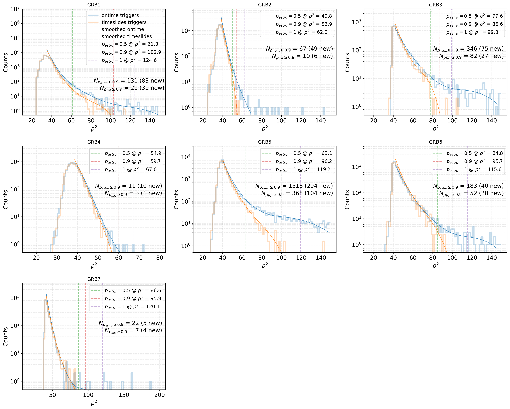
图注：\(\textbf{Trigger distribution for the different GRB classes.}\) The panels show the on-time vs. timeslides distributions and the smoothed distributions using in the $p_{\text{astro}}$ calculation. We also overlay the counts of triggers with $p_{\text{astro}}\geq0.9$ and $p_{\text{bat}}>0.9$. The "new" label indicates the number of triggers not found in the current GBM catalog.
对应解读：对应“建议重点查看的图表”第2项以及“关键图表逐图导读”图2：匹配滤波统计量背景分布、真实候选分布和 \(p_astro\) 阈值。
入选理由：这张图直接展示不同 GRB 类别的 on-time 与 timeslides 分布，并给出用于 \(p_astro\) 计算的平滑背景分布，还标注 \(p_astro\)≥0.9、\(p_bat>0.9\) 和新增触发数量。它是判断时间滑移背景尾部是否支撑高置信候选、以及568个新增 GRB 候选可信度的核心证据。
来源与置信度：\(arxiv_source\)；high；\(arxiv_source\) / main.tex:figure[4]
Fig01
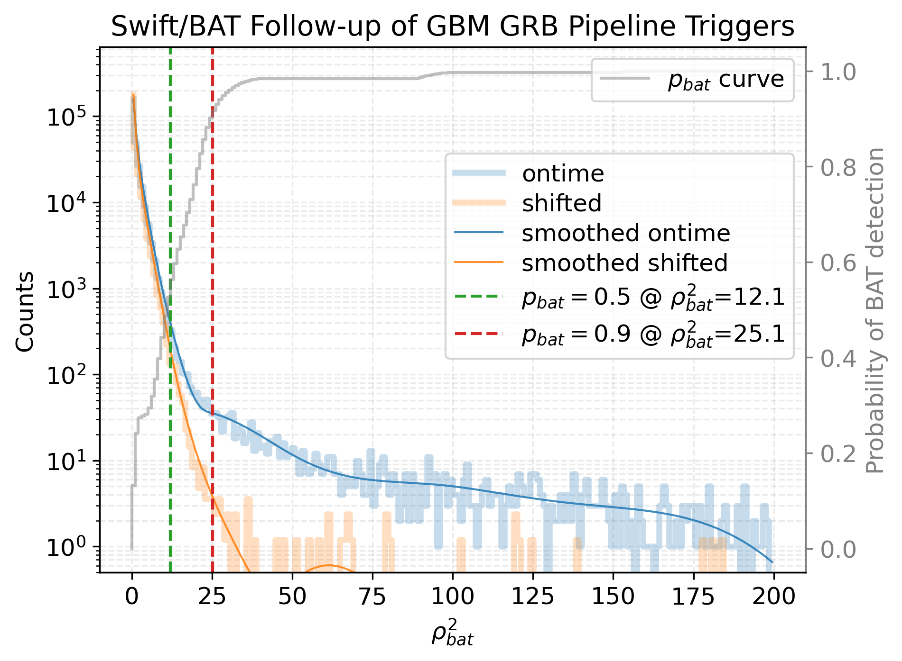
图注：\(\textbf{Swift/BAT follow-up search trigger distribution.}\) The figure shows the results of the follow-up search trigger distribution, together with an empirical estimate of the background obtained from a corresponding search at time-shifted trigger times. The statistic $\rho_{\mathrm{bat}}^2$ denotes the squared test statistic (Eq. \ref{eq: bat test stat}) after drift correction. Transparent curves show the raw histograms, while solid lines indicate the smoothed distributions used to compute $p_{\mathrm{bat}}$. Beyond $p_{\mathrm{bat}} \approx 0.5$, the background distribution decreases significantly faster than the on-time distribution, leading to a strong excess of on-time triggers. At high probabilities ($p_{\mathrm{bat}} \gtrsim 0.9$), the shifted distribution is affected by contamination from glitches and true signals, resulting in a flattening of the inferred background. Nevertheless, the probability that a high-$p_{\mathrm{bat}}$ on-time trigger is not associated with a GBM trigger becomes negligibly small.
对应解读：对应“建议重点查看的图表”第6项以及“关键图表逐图导读”图6：Swift/BAT 跟进结果、随机背景和关联概率。
入选理由：图中给出 Swift/BAT follow-up 的 on-time 触发分布与时间平移背景，并展示 \(p_bat\) 的计算依据和高概率端的背景污染问题。它直接支撑日报中关于1736个 BAT 时间符合事件、零时延附近真实关联应超过随机背景的讨论。
来源与置信度：\(arxiv_source\)；high；\(arxiv_source\) / main.tex:figure[1]
Fig05
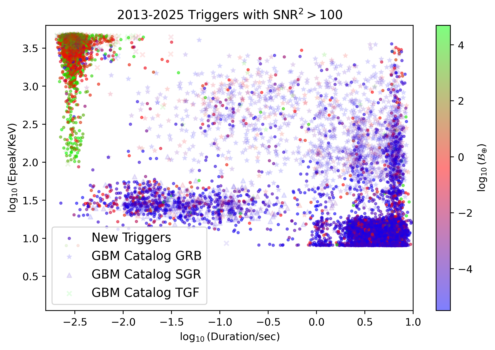
图注：\(\textbf{Peak energy v.s. Duration trigger distribution}.\) The figure shows all our triggers above SNR${}^2 = 100$ - a representative value for credible detections across all classes. Triggers that were also classified by the GBM catalog are marked by different shapes as indicated in the legend. A small jitter has been added to the duration axis to break the grid structure, and the peak energy is the median of the marginalized posterior. There are different, distinct regions in this figure that can be attributed to different source classes.
对应解读：对应“建议重点查看的图表”第5项以及“关键图表逐图导读”图5：分类诊断图，特别是硬度/峰值能量—持续时间空间中的类别分离。
入选理由：该图用 peak energy 与 duration 展示不同触发类别在参数空间中的分布，是区分 GRB、SGR、TGF、太阳耀斑等短瞬变的主要诊断图。相比单纯的分类树，它更能检验类别边界是否清晰、边界候选是否可能混淆。
来源与置信度：\(arxiv_source\)；high；\(arxiv_source\) / main.tex:figure[5]
Fig07
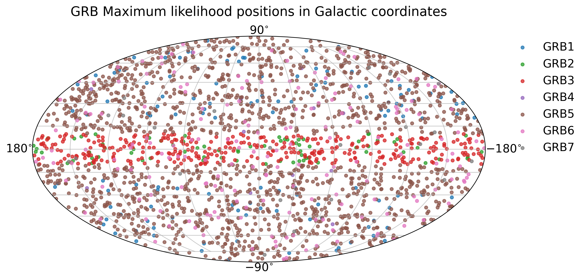
图注：\(\textbf{Sky distribution of GRB candidates.}\) The figure displays the MLE sky positions in Galactic coordinates for triggers classified as GRBs with $p_{\text{astro}}\geq 0.9$. The combined distribution of the 7 GRB classes appears isotropic, consistent with an extragalactic origin. Notably, the "GRB 3" class, which consists of triggers spatially coincident with the Galactic plane but possessing spectral and temporal properties inconsistent with SGRs, shows no significant clustering. This lack of anisotropy further strengthens their association with GRBs rather than Galactic SGRs.
对应解读：对应“建议重点查看的图表”第4项以及“关键图表逐图导读”图4：GRB 候选体的天空分布和各向同性检验。
入选理由：这张图展示 \(p_astro\)≥0.9 的 GRB 候选体在银河坐标下的 MLE 天空位置，可直接检查 GRB 样本是否近似各向同性，以及是否有银河面聚集或与磁星污染相关的异常结构。它对判断新增候选是否具有河外 GRB 族群特征非常关键。
来源与置信度：\(arxiv_source\)；high；\(arxiv_source\) / main.tex:figure[7]
Fig09
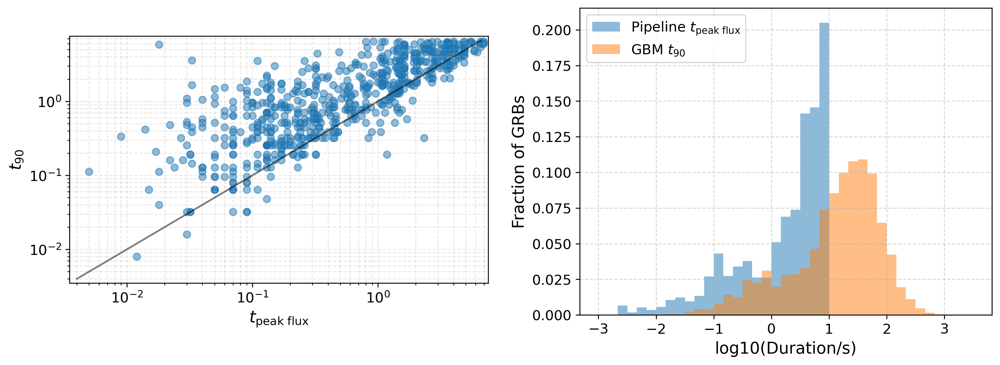
图注：\(\textbf{Duration comparison between the pipeline and the GBM catalog.}\) \(\textit{Top:}\) Comparison of the pipeline peak-flux duration (defined from the best-fit box template) and the GBM catalog $T_{90}$ for bursts common to both samples, restricted to $T_{90} < 6.57\,\mathrm{s}$. The straight line indicates equality. Above the line $t_{90}$ exceeds the pipeline duration. The plot shows that the peak-flux durations are systematically shorter than the catalog $T_{90}$ values for most bursts. \(\textit{Bottom:}\) Normalized duration distributions. The blue histogram shows $\log_{10}(\mathrm{duration/s})$ for GRB-classified pipeline events with $p_{\mathrm{astro}} \geq 0.9$, while the orange histogram shows the GBM catalog $T_{90}$ distribution. The pipeline durations are shifted toward shorter times compared to the GBM sample.
对应解读：对应“建议重点查看的图表”第3项以及“关键图表逐图导读”图3：新增候选体与 GBM 目录事件的持续时间分布比较。
入选理由：图中比较管线峰值通量持续时间与 GBM catalog T90，并给出 GRB-classified pipeline events 与 GBM 目录的持续时间直方图。它能说明新相干搜索主要扩展到更短时标事件，是理解该目录相对于机载触发样本新增了哪类事件的关键图。
来源与置信度：\(arxiv_source\)；high；\(arxiv_source\) / main.tex:figure[9]
Fig11
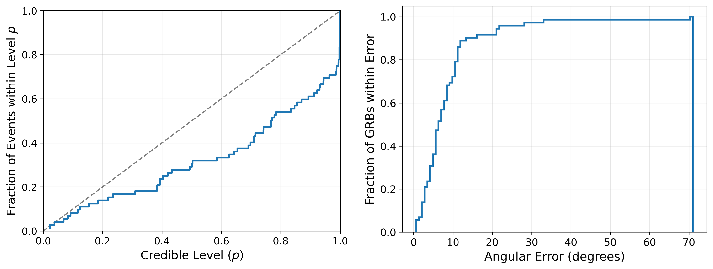
图注：\(\textbf{Systematic assessment of our localization performance}.\) We use the \(\textit{Swift}/BAT\) positions of jointly detected GRBs as the reference sky locations to evaluate our localizations. \(\textit{Top:}\) P–P plot showing the fraction of events contained within a given credible level $p$. The deviation from the diagonal expectation demonstrates that the reported credible regions are systematically underestimated.
对应解读：对应模型拟合与系统误差讨论，以及“关键图表逐图导读”中关于定位误差圈和置信区间不可过度解读的提醒。
入选理由：该图用 Swift/BAT 位置作为参考，通过 P–P plot 评估管线定位可信区间，显示 credible regions 被系统性低估。它直接支撑日报中关于低信噪比参数退化、定位系统误差和后续族群/多信使使用时不能把后验区域当作绝对精确的讨论。
来源与置信度：\(arxiv_source\)；high；\(arxiv_source\) / main.tex:figure[11]
强相关工作
这篇工作与过去 GBM 触发星表、离线未触发 GRB 搜索、BATSE 档案搜索和 Swift/BAT 短 GRB 搜索在目标上相似，但方法上更强调泊松相干建模和经验时间滑移定标。读者可检索关键词 “Fermi GBM short GRB catalog”, “untriggered GRB search”, “Poisson matched filter gamma-ray bursts”, “GBM targeted search”, “Swift BAT rate data short GRB”。特别值得比较的是 GBM 官方触发星表与面向引力波事件的 GBM targeted search，因为后者同样使用已知或假定时间窗口来提高弱信号检出率。
基础理论上，这篇工作连接了高能瞬变的光子计数统计、仪器响应折叠、似然比检验和天体起源概率混合模型。相反或存在张力的方向主要来自低信噪比候选体的可靠性：样本扩张越多，越需要证明背景尾部、磁星污染、太阳活动污染和地球伽马闪污染没有被误计为 GRB。建议检索 “short GRB duration classification selection effects”, “magnetar bursts contamination short GRB”, “terrestrial gamma-ray flashes GBM classification”, “false alarm rate time slides transient search”。
相似工作：
- https://arxiv.org/abs/2605.31554
- https://ui.adsabs.harvard.edu/search/q=Fermi%20GBM%20short%20GRB%20catalog
- https://ui.adsabs.harvard.edu/search/q=GBM%20targeted%20search%20gamma-ray%20bursts
基础理论 / 方法工作：
- https://arxiv.org/abs/0909.2470
- https://arxiv.org/abs/1706.01833
- https://ui.adsabs.harvard.edu/search/q=Fermi%20Gamma-ray%20Burst%20Monitor%20instrument
- https://ui.adsabs.harvard.edu/search/q=Poisson%20matched%20filter%20transient%20search
相反观点 / 张力线索：
- https://ui.adsabs.harvard.edu/search/q=short%20GRB%20classification%20magnetar%20bursts%20contamination
- https://ui.adsabs.harvard.edu/search/q=terrestrial%20gamma-ray%20flashes%20Fermi%20GBM%20classification
- https://ui.adsabs.harvard.edu/search/q=selection%20effects%20short%20gamma-ray%20bursts%20duration
2. Collective Winds of Massive Star Clusters as the Dominant PeVatrons for Galactic Cosmic Rays
- 来源：arXiv / astro-ph.HE
- 链接：https://arxiv.org/abs/2605.31362v1
- 作者：Zijian Qiu, Sujie Lin, Lili Yang
- 评分：novelty 8/10，importance 8/10，relevance 10/10，final 9.70/10
- 推荐理由：围绕LHAASO PeV宇宙线谱膝和PeVatron起源，提出星团集体风主导PeV区的时间依赖注入模型，并给出可由LHAASO/DAMPE检验的成分谱预言。
中文题目：大质量星团的集体星风可能是银河系宇宙线膝区的主导 PeVatron
做了什么：这篇论文讨论银河系宇宙线在约 \(4\,\mathrm{PeV}\) 的“膝”是否可由大质量恒星星风加速解释。作者建立了一个随时间演化的宇宙线注入模型，把大质量恒星从主序到晚期演化、星风终止激波的动力学发展、不同核素的刚度依赖截断都放进同一框架。核心结论是：单颗大质量恒星的星风不能自然给出 LHAASO 看到的质子和氦在约 \(3.5\,\mathrm{PV}\) 的共同刚度折断；但大质量星团的集体星风通过混合不同演化阶段恒星的贡献，可以把多种核素的膝区特征统一起来。论文还给出两个可检验预言：碳和氧在约 \(0.5\,\mathrm{PV}\) 附近应出现类似氦的变硬，而镁在多 \(\mathrm{TV}\) 区间不应出现类似氦、碳、氧的变硬。
为什么重要：宇宙线膝区长期被认为是银河系源的能量上限标志，但“谁是真正的 PeVatron”仍没有定论。LHAASO 对质子和氦谱的精确测量把问题变得更尖锐：源模型不仅要能加速到 \(\mathrm{PeV}\)，还要解释不同核素在共同刚度尺度上的折断。本文的重要性在于，它把传统的超新星遗迹、单星星风和星团集体星风放进一个分层贡献图景中，并强调膝区可能不是单个爆炸源主导，而是大质量星团长期集体反馈的结果。
理论 / 观测 / 仪器方法价值：理论上，这项工作给出了一种从恒星演化和星风激波动力学出发构造宇宙线源谱的路线，而不是只用经验幂律加截断来拟合。观测上，它把 LHAASO、DAMPE 等实验可测的核素依赖谱形作为判据，特别是碳、氧、镁的差异化预言。方法上，论文的价值在于把时间依赖注入、核素丰度、刚度截断和多类源叠加连接起来，可作为以后检验星团 PeVatron 模型的基准框架。
为什么应该关注：如果你关心银河系宇宙线起源，这篇文章值得看，因为它直接面对最新精确谱测量带来的约束，而不是停留在“某类天体能到 \(\mathrm{PeV}\)”的定性层面。如果你做高能伽马射线或中微子观测，它也有意义：集体星风 PeVatron 意味着年轻大质量星团、OB 协和星团和恒星形成区应是多信使搜索的重点。如果你做宇宙线成分测量，论文给出的碳、氧、镁谱形差异是未来几年可以证伪或支持该模型的清晰测试。
展开详细解读：文章讲解、背景、理论、重点章节、图表与相关工作
文章详细讲解
科学问题：银河系宇宙线能谱在约 \(4\,\mathrm{PeV}\) 处出现膝区，这通常被解释为银河系加速器达到最大刚度或逃逸性质发生变化。LHAASO 的新结果进一步显示，质子和氦谱在约 \(3.5\,\mathrm{PV}\) 附近有共同的刚度依赖折断。这对源模型非常苛刻：若膝区来自加速端，模型必须不仅能把粒子推到 \(\mathrm{PeV}\)，还要让不同核素的截断近似按刚度 \(R=pc/(Ze)\) 对齐。单一源类、单一演化阶段或单颗恒星的模型往往很难同时满足能量上限、成分和谱形三项要求。
作者怎么做：论文构建了一个时间依赖的宇宙线注入模型，把大质量恒星的完整演化和星风终止激波的动力学发展纳入计算。星风速度、质量损失率、机械功率、终止激波半径和磁场条件都会随恒星演化阶段变化，从而影响最大刚度和注入强度。作者分别考察单颗大质量恒星星风和大质量星团集体星风的贡献，并把它们与超新星遗迹的低能贡献组合起来，形成一个“超新星遗迹主导 \(\mathrm{GeV}\) 到 \(\mathrm{TeV}\)、单星星风主导 \(\mathrm{TeV}\) 区间、星团集体风主导膝区”的分层模型。
关键结果：单颗大质量恒星的星风虽然可以在某些阶段提供强激波，但由于不同核素受到注入环境、丰度和截断刚度的影响不同，模型会给出质子与氦不一致的刚度截断，难以解释 LHAASO 所见的共同折断。集体星风则不同：星团内许多大质量恒星处在不同演化阶段，星风混合后形成更稳定、更宽尺度的集体流和激波结构，使各类核素的总谱在叠加后更容易表现为共同刚度特征。作者声称该模型还能同时重现不同核素在约 \(100\,\mathrm{GV}\) 和约 \(0.1\,\mathrm{PV}\) 附近的刚度依赖谱结构。
局限和下一步：这类模型不可避免依赖恒星演化轨道、星风质量损失率、星团初始质量函数、星团年龄分布、磁场放大效率、扩散系数和源丰度等输入。即便谱形拟合成功，也仍需与伽马射线形态、星团年龄、气体靶分布和中微子预期交叉验证。下一步最关键的观测检验是 LHAASO 对碳、氧膝前变硬的确认，以及 DAMPE 或后续探测器对镁在多 \(\mathrm{TV}\) 区间是否缺乏类似变硬的检验。若这些成分预言失败，集体星风主导膝区的版本就需要大幅调整。
背景知识
研究对象是银河系宇宙线的源谱和成分。宇宙线总能谱近似为幂律，但在约 \(4\,\mathrm{PeV}\) 处变陡，这一结构被称为膝。因为带电粒子的轨迹被银河磁场偏折，直接反推源位置很困难，所以膝区的物理解释主要依赖能谱、成分、各向异性以及伴随的伽马射线和中微子信号。若膝来自源端最大能量，最自然的变量不是总能量 \(E\)，而是刚度 \(R\)，因为电磁加速和磁约束主要由电荷 \(Z e\) 控制。
长期以来，超新星遗迹是银河系宇宙线源的标准候选。它们有足够的机械能，激波加速理论也成熟，且许多超新星遗迹确实发出非热射电、\(\mathrm{X}\) 射线和 \(\gamma\) 射线。然而，普通超新星遗迹是否能稳定加速质子到 \(\mathrm{PeV}\) 仍有争议。年轻遗迹在短时间内或许能达到很高能量，但持续时间、逃逸过程和周围靶物质分布都会影响可观测信号。
大质量恒星和星团是另一类越来越受关注的候选源。OB 星、Wolf-Rayet 星以及年轻星团通过高速星风和集体反馈向周围介质注入巨大机械能。多个星风相互碰撞后可形成湍动热泡、集体外流和大尺度终止激波，这些结构可能提供比单一超新星遗迹更长寿的加速环境。近年来，年轻大质量星团和恒星形成区附近的 \(\mathrm{TeV}\) 到 \(\mathrm{PeV}\) 伽马射线探测增强了这种兴趣。
为什么现在值得重新看，关键在于直接宇宙线成分测量和地面广延大气簇射实验都进入了高精度阶段。LHAASO 对质子、氦及轻成分的测量使源模型不能只拟合总谱，而要解释不同核素的相对谱形。DAMPE、CALET、AMS-02 等实验在 \(\mathrm{GV}\) 到 \(\mathrm{TV}\) 刚度范围内发现多种核素的谱硬化，也要求源模型跨越较宽能区进行统一说明。
一个常见误区是把“某天体能加速到 \(\mathrm{PeV}\)”等同于“它解释了膝”。真正的要求更复杂：加速上限、源丰度、注入谱、传播效应、逃逸时间、局域源涨落和探测系统误差都可能改变观测谱形。另一个误区是把质子能量膝和核素能量膝混在一起；若折断由刚度决定，氦、碳、氧等核素在总能量上的特征位置会按 \(Z\) 缩放，而不是在同一能量处出现。
基础理论 / 方法脉络
基本物理图像是扩散激波加速。带电粒子在磁化等离子体中的激波两侧反复散射，每次穿越激波获得少量能量增益，最终形成近似幂律的动量谱。加速能否达到 \(\mathrm{PeV}\) 取决于激波速度、磁场强度、加速区尺寸和可用时间。对恒星风终止激波而言，风速和质量损失率决定机械功率，周围介质压力和星团环境决定终止激波半径。
单颗大质量恒星的星风是高度时间依赖的。主序 O 星、红超巨星、蓝超巨星、Wolf-Rayet 阶段的风速、质量损失率和化学成分差异很大，因此粒子最大刚度和注入丰度也会随时间变化。若只考虑单星，质子和氦可能主要来自不同阶段或不同局域条件，导致它们的谱截断不自然地错开。
星团集体风的关键假设是混合。许多大质量恒星同时贡献星风和机械能，局部差异被星团尺度的热化、湍流和集体外流部分平均。这样形成的加速环境不再由某一颗恒星的瞬时状态决定，而是由星团的总机械功率、年龄、恒星质量函数和整体磁化条件决定。该混合效应可以降低单星模型中核素截断差异过大的问题。
观测上，论文关心的是不同核素的能谱是否在刚度空间出现共同结构。直接探测器在较低能区提供高精度元素谱，地面实验在更高能区通过大气簇射重建能量和成分。这里的系统误差很重要：能标偏差、核相互作用模型、簇射成分判别、探测器接受度和元素交叉污染都可能把谱硬化或折断的位置推移。
常见退化包括源端截断与传播端逃逸的退化、注入谱斜率与扩散系数斜率的退化、元素丰度与探测效率的退化、局域源涨落与平均银河源分布的退化。本文的优势是提出可区分的元素预言：如果碳、氧与氦同步变硬，而镁不变硬，那么这种核素选择性比总谱拟合更能约束星团风模型。
公式与推导
第一步从刚度定义开始。对电荷数为 \(Z\) 的相对论粒子，刚度为
其中 \(p\) 是动量，\(c\) 是光速，\(e\) 是元电荷，\(E\) 是总能量的相对论近似。若加速或逃逸由磁场控制，谱结构应主要出现在相同的 \(R\)，而不同核素在能量轴上的位置按 \(Z\) 缩放。
第二步写出星风机械功率。单颗恒星的星风功率为
其中 \(\dot{M}(t)\) 是质量损失率，\(v_{\rm w}(t)\) 是风速。论文的时间依赖性主要来自这两个量随恒星演化阶段变化。
第三步估计终止激波尺度。若星风动压与外部压力 \(P_{\rm ext}\) 平衡，则
其中 \(R_{\rm ts}\) 是风终止激波半径。它决定粒子可被约束和加速的空间尺度。
第四步给出扩散激波加速的时间尺度。采用 Bohm 型扩散近似时，扩散系数可写为
其中 \(r_{\rm L}\) 是 Larmor 半径，\(B\) 是磁场强度。强湍流条件下该式给出较乐观的加速效率。
第五步把扩散与激波速度联系起来。强激波的加速时间可近似写成
其中 \(u_{\rm sh}\) 是激波速度，\(\eta_{\rm acc}\) 是与压缩比和上下游扩散性质有关的无量纲系数。最大能量由 \(t_{\rm acc}\) 与年龄、逃逸或损失时间比较得到。
第六步得到最大刚度的尺度关系。令 \(t_{\rm acc}=t_{\rm lim}\)，可得
其中 \(t_{\rm lim}\) 可代表源年龄、风阶段持续时间或逃逸时间。这个式子说明高 \(B\)、高 \(u_{\rm sh}\)、长持续时间有利于形成 PeVatron。
第七步写出元素注入谱的常用形式。对核素 \(i\)，源注入可参数化为
其中 \(Q_{0,i}(t)\) 含有元素丰度和注入效率，\(s_i\) 是注入谱指数，\(R_0\) 是参考刚度。单星模型的问题在于 \(Q_{0,i}(t)\) 和 \(R_{\max,i}(t)\) 对演化阶段过于敏感。
第八步表示星团集体混合。若星团中有许多恒星 \(k\)，总注入为
其中 \(T\) 是星团年龄，\(\Psi_k\) 表示不同质量恒星的形成和演化权重。该式体现了论文强调的混合效应：不同阶段的截断和丰度被时间积分与星团人口叠加平滑化。
第九步连接到传播后的观测通量。在稳态扩散近似下，局域通量可写成
其中 \(Q_i^{\rm tot}\) 包含超新星遗迹、单星风和星团风贡献，\(V_{\rm eff}\) 是有效传播体积，\(\tau_{\rm esc}\) 是银河逃逸时间，\(\delta\) 是扩散斜率。观测谱指数约为源谱指数加上传播软化。
第十步给出拟合诊断。若用元素谱数据 \(\Phi_{i,n}^{\rm obs}\) 约束模型，常见统计量为
其中 \(n\) 标记刚度数据点，\(\boldsymbol{\theta}\) 是源和传播参数，\(\sigma_{i,n}\) 包括统计误差和系统误差。对本文而言，最关键的不是单个 \(\chi^2\) 数值，而是模型能否同时对齐质子、氦以及更重核素的刚度结构。
模型拟合 / 应用方法
这类工作拟合的核心量是各元素随刚度或能量变化的微分通量。模型通常包括若干源类：超新星遗迹、单颗恒星风、星团集体风，每一类有注入谱指数、归一化、最大刚度、元素丰度和可能的低能调制参数。传播部分可能采用经验扩散软化，也可能接入更完整的银河传播模型。本文摘要显示作者采用的是源端时间依赖注入加多源类叠加的思路，重点比较单星风和集体星风在核素截断上的差别。
参数估计可用 \(\chi^2\)、高斯似然或包含系统协方差矩阵的似然完成。对于 LHAASO、DAMPE、AMS-02 等不同实验的组合，能标系统误差尤其重要，因为谱折断位置对能标偏移敏感。若把不同实验数据简单拼接而不处理交叉归一化，可能会把仪器间张力误判为真实天体物理结构。
残差应按元素和刚度分别查看。一个模型即使能拟合总 all-particle 能谱，也可能在质子、氦、碳、氧或镁的残差上出现系统偏差。本文最值得检查的残差是：单星风模型中质子与氦截断是否错位；集体星风模型是否真正把二者拉到共同 \(\sim 3.5\,\mathrm{PV}\)；碳、氧、镁的预言是否来自稳健物理机制，而不是调参后的偶然结果。
主要退化关系包括源谱指数 \(s_i\) 与传播指数 \(\delta\) 的退化、最大刚度 \(R_{\max}\) 与指数截断形状的退化、元素丰度与注入效率的退化、星团年龄分布与星风阶段持续时间的退化。若模型允许过多元素独立参数，就会降低“共同刚度折断”的解释力度。因此读者应关注作者是否对元素丰度和加速效率施加物理约束，而不是逐元素自由拟合。
模型可能失败的地方也很明确。若未来 LHAASO 发现碳、氧在约 \(0.5\,\mathrm{PV}\) 不出现预言的硬化，或者 DAMPE 发现镁在多 \(\mathrm{TV}\) 区间也与氦、碳、氧同步变硬，那么当前版本的星团混合解释会受到压力。此外，若星团 PeVatron 的空间分布无法解释宇宙线各向异性，或伽马射线观测没有在相应年轻星团周围看到足够强的强子辐射，也需要重新评估模型。
重点章节 / 结果段落怎么读
数据与观测约束部分应首先看作者如何使用 LHAASO 的质子和氦谱，特别是共同刚度折断约 \(3.5\,\mathrm{PV}\) 是作为硬约束、拟合目标还是后验比较量。还应看是否同时纳入了 AMS-02、DAMPE、CREAM、CALET 或其他实验在 \(\mathrm{GV}\) 到 \(\mathrm{TV}\) 区间的核素谱。
恒星演化与星风模型部分是论文的物理核心。读者应检查质量损失率、风速、恒星初始质量、寿命和演化阶段如何进入模型。尤其要看单星星风为何给出质子和氦不同的刚度截断，这一结论是否来自普遍的演化物理，还是依赖某些选定恒星质量或风参数。
星团集体风部分应重点读。这里应说明星团内不同恒星如何叠加，集体风终止激波如何形成，混合效应如何改变最大刚度和元素谱形。若论文给出了星团年龄、总机械功率或恒星质量函数的典型取值，应判断这些取值是否符合银河系已知年轻大质量星团。
多源类宇宙线谱拟合部分决定模型是否真正统一。读者应看超新星遗迹、单星风、集体星风分别在哪些刚度区间占主导，以及这些分量交接处是否产生人为结构。约 \(100\,\mathrm{GV}\)、约 \(0.1\,\mathrm{PV}\) 和约 \(3.5\,\mathrm{PV}\) 的谱特征是否能由同一套参数解释，是判断说服力的关键。
讨论与预言部分最适合作为快速检验清单。论文提出碳和氧在约 \(0.5\,\mathrm{PV}\) 附近应有类似氦的变硬，镁在多 \(\mathrm{TV}\) 区间不应有相同变硬。读者应关注这些预言是否足够定量，例如变硬幅度、刚度位置和可观测误差范围是否给出。
建议重点查看的图表
-
总模型框架图或源分量分解图：应检查超新星遗迹、单星风、星团集体风分别在哪些刚度区间占优，以及分量交接是否平滑。
-
单颗大质量恒星星风演化图：应看 \(\dot{M}\)、\(v_{\rm w}\)、\(L_{\rm w}\)、\(R_{\rm ts}\) 或 \(R_{\max}\) 随时间如何变化，哪些演化阶段贡献最高能粒子。
-
单星风与 LHAASO 质子、氦谱比较图：重点看质子和氦截断位置是否在刚度空间错开，以及这种错开是否超过观测误差。
-
星团集体风模型谱图：重点看集体混合后质子和氦是否共同在约 \(3.5\,\mathrm{PV}\) 折断，残差是否有系统偏离。
-
多元素谱拟合图：应检查氦、碳、氧、镁等元素在 \(100\,\mathrm{GV}\) 到 \(0.1\,\mathrm{PV}\) 附近的硬化或折断是否同时再现。
-
参数敏感性或稳健性图：应看星团年龄、恒星质量函数、磁场放大、扩散系数变化后，关键预言是否保持。
-
未来观测预言图：重点看碳、氧在约 \(0.5\,\mathrm{PV}\) 的硬化幅度，以及镁在多 \(\mathrm{TV}\) 区间不硬化的可测性。
关键图表逐图导读
图 1：若论文给出宇宙线各元素或总谱的观测概览，横轴通常是能量或刚度，纵轴可能是乘以幂律因子的通量，例如用 \(R^{\gamma}\Phi\) 强调谱结构。读图时不要只看曲线是否穿过数据点，还要看质子和氦在刚度空间的折断是否对齐。若坐标是总能量而非刚度，不同核素的结构位置需要按 \(Z\) 换算。
图 2：恒星风演化图通常会展示质量损失率、风速、机械功率或最大刚度随恒星年龄变化。数据点或曲线的突变往往对应恒星演化阶段转换。读图陷阱是把某一短暂高 \(R_{\max}\) 阶段等同于主要贡献；真正贡献还取决于该阶段持续时间和注入功率。
图 3：单星风模型与质子、氦谱比较图应重点看模型线在高刚度端的截断。若质子和氦模型线在不同刚度转折，即使各自局部拟合不错，也说明单星模型难以解释 LHAASO 的共同刚度折断。注意误差棒是否包含系统误差；若只画统计误差，视觉张力可能被夸大。
图 4：星团集体风模型图应显示多颗恒星或多阶段贡献叠加后的总谱。坐标轴若为刚度，模型成功的标志是不同核素的转折更接近共同刚度尺度，并且没有在分量叠加处产生不自然的波纹。若有阴影带，应理解为参数不确定性而不是观测误差。
图 5：多源类分解图通常用不同线型表示超新星遗迹、单星风和星团风。读者应检查 \(\mathrm{GeV}\) 到 \(\mathrm{TeV}\) 区间是否确由超新星遗迹主导，\(\mathrm{TeV}\) 区间是否由单星风增强，膝区是否由星团风接管。若某个分量只在很窄能段被调高，可能提示模型自由度过大。
图 6：元素预言图最重要。横轴应覆盖 DAMPE 和 LHAASO 可测范围，纵轴最好显示碳、氧、镁相对基准幂律的偏离。碳、氧在约 \(0.5\,\mathrm{PV}\) 的硬化如果幅度小于预期系统误差，预言就不够强；镁不硬化的判断也要考虑元素电荷误判和统计量不足。
论文原图 / 可嵌入图片
Fig06
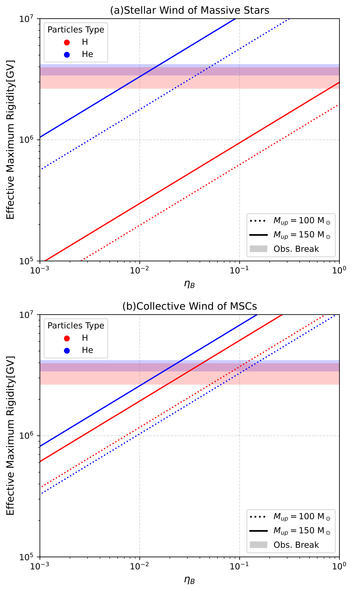
图注：Effective maximum rigidity of H and He for different values of $\eta_B$. Panels (a) and (b) show the results for particle injection from individual massive-star winds and collective winds in MSCs, respectively. Red and blue lines correspond to H and He. The shaded bands indicate the break rigidity and its uncertainty measured by LHAASO \(\cite{collaborationFirstIdentificationPrecise2025,collaborationPreciseMeasurementCosmic2025}.\) Solid and dashed lines represent the numerical results for $M_{\mathrm{up}}=150\,M_{\odot}$ and $100\,M_{\odot}$, respectively.
对应解读：对应“单星风与 LHAASO 质子、氦谱比较图”“星团集体风模型谱图”以及模型拟合段落中关于质子/氦是否具有共同约 3.5 PV 折断的核心检验。
入选理由：这张图直接比较单颗大质量恒星星风与星团集体风下 H、He 的有效最大刚度，并叠加 LHAASO 折断刚度及不确定性阴影带，是判断“单星风失败、集体风成功”这一主结论的最关键证据。
来源与置信度：\(arxiv_source\)；high；\(arxiv_source\) / apssamp.tex:figure[6]
Fig08
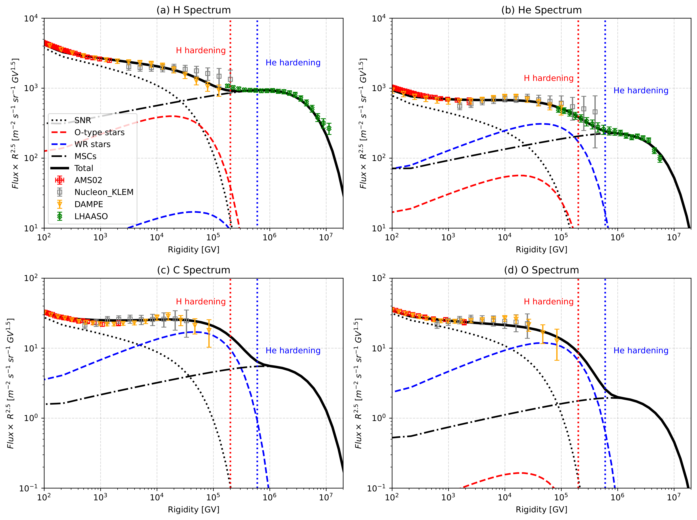
图注：Comparison of particle rigidity spectra calculated with GALPROP and observations \(\cite{2021PhR...894....1A,2023PhRvL.130u1002A,2019AdSpR..64.2546G,2026NatAs.tmp...79L,collaborationFirstIdentificationPrecise2025,collaborationPreciseMeasurementCosmic2025}.\) Panels (a)--(d) show the spectra of protons, helium, carbon, and oxygen, respectively. Different line styles denote contributions from different source populations. The red and blue dashed lines represent the contributions from O-type and WR stellar winds, respectively. The approximate hardening rigidities of protons and helium are indicated by the red and blue dotted lines.
对应解读：对应“总模型框架图或源分量分解图”“多元素谱拟合图”以及关键图表导读中关于超新星遗迹、单星风、星团风在不同刚度区间分工的部分。
入选理由：该图给出 GALPROP 计算的质子、氦、碳、氧刚度谱并与观测比较，同时用不同线型区分不同源类贡献，最适合展示模型是否同时再现多元素谱形、100 GV 到 0.1 PV 附近结构以及不同源类的能区接管。
来源与置信度：\(arxiv_source\)；high；\(arxiv_source\) / apssamp.tex:figure[8]
Fig09
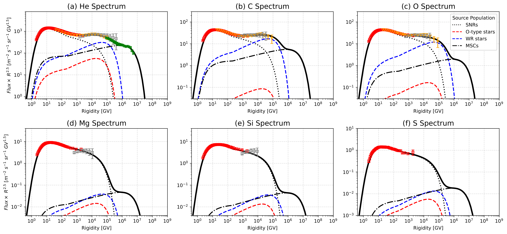
图注：Comparison between calculated rigidity spectra and observations over a wide rigidity range \(\cite{2021PhR...894....1A,2023PhRvL.130u1002A,2019AdSpR..64.2546G,2026NatAs.tmp...79L,collaborationPreciseMeasurementCosmic2025}.\) Panels (a)--(c) in the first row show He, C, and O, which exhibit similar rigidity dependence, while panels (d)--(f) in the second row show Mg, Si, and S, which display different rigidity-dependent behavior. Line styles and colors follow the same notation as in Fig.~\(\ref{fig:H-He}.\)
对应解读：对应“未来观测预言图”和关键图表导读中关于 He/C/O 与 Mg/Si/S 是否表现出不同刚度依赖行为的讨论。
入选理由：这张图直接把 He、C、O 与 Mg、Si、S 分成两组比较，正好对应摘要中的可检验预言：碳氧应类似氦出现硬化，而镁等不应在多 TV 区间表现出同样硬化，是日报中未来观测检验部分最值得嵌入的图。
来源与置信度：\(arxiv_source\)；high；\(arxiv_source\) / apssamp.tex:figure[9]
Fig05
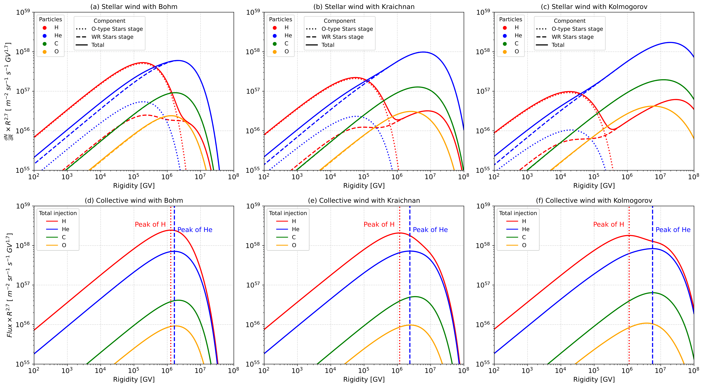
图注：Total injection spectra of different particle species for a cluster with a total stellar mass of \(3\times10^4\,M_\odot\). Panels (a)–(c) and (d)–(f) show the stellar-wind and collective-wind models, respectively. From left to right, the columns correspond to the Bohm, Kraichnan, and Kolmogorov turbulence models. Colors indicate particle species, and dotted, dashed, and solid lines denote the contributions from the O-type phase, WR phase, and the total spectra, respectively.
对应解读：对应“星团集体风模型谱图”和“单星风与集体星风差别”的逐图导读，尤其是不同湍流模型、O 型星阶段与 WR 阶段叠加后的注入谱。
入选理由：该图系统比较单星风模型与集体风模型的总注入谱，并展示 Bohm、Kraichnan、Kolmogorov 三种湍流情形下不同核素和不同演化阶段的贡献，有助于理解集体混合如何改变谱形，而不只是给出最终拟合曲线。
来源与置信度：\(arxiv_source\)；high；\(arxiv_source\) / apssamp.tex:figure[5]
Fig04
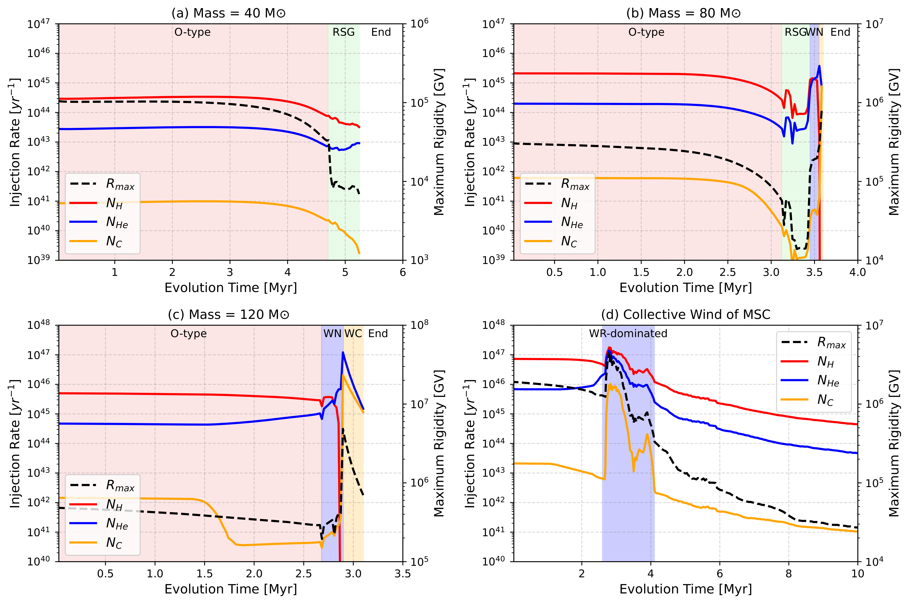
图注：Temporal variations of $R_{\text{max}}$ and $N_Z$ with Bohm turbulence spectra ($\eta_B=0.01$, $\gamma=-2$, $\eta_{acc}=0.1$). Solid and dashed lines correspond to the left and right y-axes, respectively. Colored regions and panel definitions are the same as in Fig.~\(\ref{fig:StarEvo}.\)
对应解读：对应“单颗大质量恒星星风演化图”中关于最大刚度、注入数量随时间和演化阶段变化的诊断。
入选理由：相比只展示风速和质量注入率的演化图，这张图直接给出与宇宙线加速最相关的 $R_{\ ext{max}}$ 和 $N_Z$，能说明哪些恒星演化阶段既能达到高刚度又有足够粒子注入，是理解单星风为何产生核素相关截断的重要中间证据。
来源与置信度：\(arxiv_source\)；high；\(arxiv_source\) / apssamp.tex:figure[4]
Fig02
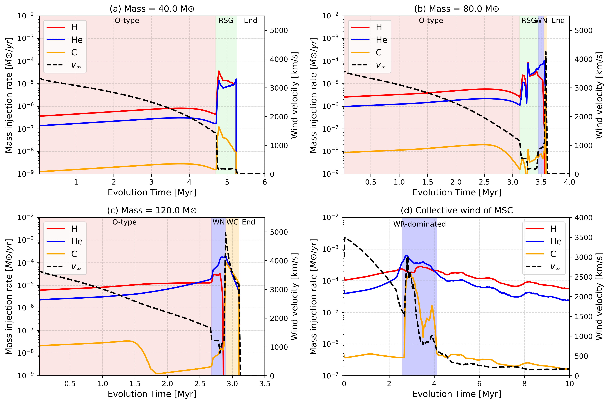
图注：Temporal evolution of stellar wind velocity (dashed lines, right y-axis) and mass injection rates of H, He, and C (solid lines, left y-axis). Panels (a)–(c) show stars of 40, 80, and 120 $\,M_{\odot}$, respectively, panel (d) shows the collective winds. Colored regions indicate evolutionary stages, red for O-type, green for RSG, blue for WN-type, and orange for WC-type. Blank areas mark the end of stellar evolution.
对应解读：对应“单颗大质量恒星星风演化图”中关于 $\\dot M$、风速和不同演化阶段的基础物理输入。
入选理由：该图展示 40、80、120 太阳质量恒星以及集体风的风速和 H、He、C 质量注入率随时间变化，并标出 O 型、RSG、WN、WC 阶段，是解释后续最大刚度、元素丰度和阶段贡献差异的基础图。
来源与置信度：\(arxiv_source\)；high；\(arxiv_source\) / apssamp.tex:figure[2]
强相关工作
这篇工作与超新星遗迹 PeVatron 模型形成直接对比。传统观点认为超新星遗迹通过扩散激波加速提供银河系宇宙线主体，但普通遗迹达到 \(\mathrm{PeV}\) 的时间窗口可能很短。星团集体风模型则把加速环境从单个爆炸激波扩展到大质量恒星长期集体反馈，相关检索关键词包括“cosmic ray knee rigidity dependent break”、“massive star cluster PeVatron”、“collective stellar winds cosmic rays”和“LHAASO proton helium spectra”。
它也与年轻星团和恒星形成区的高能伽马射线观测相联系，例如 Cygnus Cocoon、Westerlund 1、Westerlund 2、30 Doradus C 等对象常被讨论为集体风或 superbubble 加速候选。相反或有张力的方向包括：膝区主要由传播逃逸导致、局域近期源导致谱结构、或不同实验能标和成分重建系统误差造成表观共同折断。建议检索“superbubble cosmic ray acceleration”、“Cygnus Cocoon gamma rays”、“Westerlund PeVatron”、“cosmic ray propagation knee anisotropy”。
相似工作：
- https://arxiv.org/abs/2605.31362
- https://arxiv.org/abs/2106.09865
- https://arxiv.org/abs/2111.01178
基础理论 / 方法工作：
- https://ui.adsabs.harvard.edu/abs/1978MNRAS.182..147B/abstract
- https://ui.adsabs.harvard.edu/abs/1977ICRC...11..132A/abstract
- https://ui.adsabs.harvard.edu/abs/1983RPPh...46..973D/abstract
- https://ui.adsabs.harvard.edu/abs/1983A%26A...125..249L/abstract
相反观点 / 张力线索：
- https://arxiv.org/abs/1804.10175
- https://arxiv.org/abs/1909.08672
3. Extreme Transients in Gamma Rays
- 来源：arXiv / astro-ph.HE
- 链接：https://arxiv.org/abs/2605.31089v1
- 作者：Daniela Hadasch, Dmitriy Khangulyan
- 评分：novelty 5/10，importance 8/10，relevance 10/10，final 8.80/10
- 推荐理由：MeV-TeV极端伽马射线暂现源综述，覆盖GRB、novae、喷流、Crab耀发及空间/地面伽马仪器能力；新结果少但对伽马射线暂现源读者很有用。
中文题目：Extreme Transients in Gamma Rays
做了什么：本篇论文已通过推荐筛选，但自动详细解读生成失败。可先根据题目和摘要判断阅读优先级：Extreme gamma-ray transients represent some of the most energetic and physically constraining phenomena in high-energy astrophysics. They are characterized by rapid, large-amplitude variability and by physical conditions approaching fundamental limits on particle acceleration, cooling, and compactness. In this review, we focus on transients detected above around 100 MeV and define extreme events as either those involving catastrophic transformations of astrophysical systems (such as stellar explosions, compact-object mergers, and tidal-disruption events) or those exhibiting evidence for particle acceleration operating in an extreme regime. These systems are powered by the rapid release of gravitational, magnetic, nuclear, or kinetic energy, with shocks and magnetic reconnection playing a central role in producing ultra-relativistic particle populations and non-thermal radiation. We summarize observational and theoretical diagnostics that constrain the size, magnetization, and Lorentz factor of the emitting region, including variability timescales, luminosity-timescale correlations, and spectral evolution across the MeV-TeV domain. We further review the complementary capabilities of space-borne gamma-ray instruments, ground-based Cherenkov and air-shower observatories in detecting short-lived, high-energy outbursts. Extreme transient classes discussed include gamma-ray bursts, novae, rapidly variable emission from extragalactic and Galactic jets. Also, because of its extreme aspects, we include flaring emission detected from the Crab Nebula. While each type of these flares poses interesting challenges for phenomenology and theory of these sources, together, these events form the landscape of extreme gamma-ray variability.
为什么重要：这篇论文在今日候选中通过了本地推荐阈值，说明它与当前高能天体物理兴趣方向或质量标准较匹配；详细内容建议优先查看原文摘要、结论和图表。
理论 / 观测 / 仪器方法价值：由于 LLM 摘要 JSON 解析失败，本节保留为安全占位，不编造论文未确认的公式、图号或链接。
为什么应该关注：日报仍保留这篇论文，是为了避免单篇摘要失败导致整份日报缺失。请把它作为需要人工快速复核的高优先级候选。
展开详细解读：文章讲解、背景、理论、重点章节、图表与相关工作
文章详细讲解
本文的核心科学问题是：当伽马射线瞬变在短时间内达到高光度和高能端探测时，哪些物理量被真正约束？作者把问题拆成几个可观测诊断：最短光变时标限制源区尺度；最高光子能量和谱截止限制洛伦兹因子、吸收深度和粒子最高能量；多波段同步性限制电子或强子辐射通道；光度--时标分布帮助比较不同源类的能量释放方式。
方法上，这篇文章不是单一数据分析论文，而是综述型整理。它把 GRB、新星、银河系和河外喷流、Crab 相关耀发等放在同一“极端瞬变”坐标系中讨论。读者应关注每个案例使用的仪器和能段：Fermi-LAT 的 \(>100\,\mathrm{MeV}\) 结果通常提供 GeV 光变和谱指数；IACT 或空气簇射阵列结果提供 TeV 延伸或上限；X 射线、光学、射电数据则帮助定位冲击、喷流或脉冲星环境中的粒子注入过程。
关键结果层面，摘要已经指出几条主线：极端瞬变往往由引力、磁能、核能或动能快速释放驱动；冲击和磁重联是产生超相对论粒子的重要机制；光变时标、光度--时标相关性和 MeV--TeV 谱演化可以共同约束辐射区尺度、磁化程度和洛伦兹因子。对研究生读者而言，最有用的读法不是记住某个对象“很亮”，而是为每类对象列出约束链：观测量 \(\rightarrow\) 模型假设 \(\rightarrow\) 物理参数 \(\rightarrow\) 剩余退化。
几个图提供了具体锚点。图 2 比较 RS Ophiuchi 与其他 Fermi-LAT 新星的谱和总能量--持续时间位置，适合检查新星伽马射线是否可由冲击加速解释，以及 RS Oph 是否在能量释放或持续时间上偏离样本。图 4 用多波段上限和探测点表示 Crab 主脉冲巨射电脉冲相关增强随能量变化，强调非探测上限同样能限制辐射模型。图 5 将 Crab 星云耀发的同步、IC 和总谱模型与 CTAO-N 灵敏度比较，是连接粒子谱、磁场假设和未来探测能力的关键图。
局限性也应明确。综述汇集的各源类观测并非均匀样本：触发阈值、曝光、视场、数据公开程度和时间 bin 选择差异很大。不同论文采用的谱模型、能量积分范围和距离假设也可能不同，因此横向比较光度、总能量或极端程度时要核对定义。若原文没有给出统一重拟合，读者不应把所有图上的点当作来自同一统计框架的参数估计。
下一步可修复或深化的方向包括：为不同源类建立统一的 luminosity--timescale--energy 图；把探测和上限统一纳入层级贝叶斯框架；对短时标事件进行能量依赖光变和滞后分析；对 Crab 和新星等近源进行可预报的 CTAO 触发模拟；并在 GRB 和喷流事件中联合中微子、引力波或光学巡天数据，测试强子成分和灾变起源。
背景知识
极端伽马射线瞬变是高能天体物理中最能“逼近极限”的现象之一：它们在很短时间内释放巨大非热辐射功率，常常要求辐射区具有很小尺度、很高粒子能量密度、很强磁场或很大的相对论多普勒因子。本文是一篇综述，关注约 100 MeV 以上探测到的瞬变事件，并把“极端”理解为两类情形：一类是系统发生灾变性转变，例如恒星爆炸、致密星并合、潮汐瓦解事件等；另一类是即使系统本身未被摧毁，辐射行为也显示粒子加速、冷却或紧致性接近基本物理限制。
历史上，伽马射线瞬变研究首先由伽马暴推动。GRB 的毫秒到分钟级光变、各向同性等效能量和非热谱表明，源区必须是相对论膨胀的，否则会遭遇严重的 \(\gamma\gamma\) 吸收和能量密度灾难。后来 Fermi-LAT、AGILE、MAGIC、H.E.S.S.、VERITAS、HAWC、LHAASO 以及切伦科夫望远镜阵列的发展，把瞬变窗口从 keV--MeV 扩展到 GeV--TeV，使人们可以同时追踪辐射谱峰、高能尾、截止能量、延迟高能辐射和跨能段相关性。
本文覆盖的对象不仅包括 GRB，还包括经典新星或再发新星中的 GeV--TeV 辐射、银河系和河外喷流中的快速耀发，以及 Crab 星云/脉冲星相关的极端耀发。它们的共同点不是同一种天体，而是类似的诊断逻辑：短时标给出源区尺寸上限，光度给出能量释放率，谱形给出粒子分布和冷却机制，多波段同时性给出同步辐射、逆康普顿、强子过程或级联之间的区分。
阅读这类综述时要避免一个常见误区：不能把“亮”简单等同于“极端”。一个事件是否极端，取决于光度、持续时间、谱硬度、最高光子能量、辐射效率、紧致性和源区几何的组合。例如一个低红移近源可因距离近而看起来明亮，但物理条件并不一定极端；相反，一个高红移 GRB 若在很短时间内出现几十 GeV 光子，则可能对洛伦兹因子、内禀吸收和加速效率提出更强约束。
另一个误区是把所有 GeV--TeV 瞬变都归入单一辐射机制。新星冲击、脉冲星风星云、活动星系核喷流和 GRB 外激波的环境密度、磁化程度、光子场和几何尺度差异巨大。本文的价值在于把不同源类放到统一诊断框架下比较：哪些结论来自普适的因果尺度和辐射损失，哪些结论依赖对象特定的动力学模型、仪器响应和观测选择效应。
基础理论 / 方法脉络
理解本文首先要从非热粒子加速的基本图像出发。伽马射线瞬变中的高能光子通常不是热黑体尾部，而是由相对论电子或质子在冲击、磁重联、湍流或电场中被加速后产生。电子可通过同步辐射和逆康普顿散射产生 MeV--TeV 光子；质子和原子核可通过 \(pp\) 或 \(p\gamma\) 相互作用产生 \(\pi^0\) 衰变伽马射线，并伴随中微子。区分这些机制需要同时看谱形、光变、环境密度、目标光子场以及能量预算。
极端性最直接的约束来自光变时标。若观测到通量在 \(t_{\rm var}\) 内显著变化，则相干辐射区的尺度通常满足 \(R\lesssim c t_{\rm var}\delta/(1+z)\)，其中 \(\delta\) 是多普勒因子。这个关系并非精确测半径，而是因果上限；如果辐射区有多个小团块、湍流单元或相对论“mini-jet”，实际几何可以更复杂。因此本文讨论快速瞬变时，读者应把时标、亮度和谱硬度一起使用，而不是只根据一个最短 bin 得出源区大小。
粒子最高能量由加速时间和损失/逃逸时间竞争决定。常用的现象学加速时间写作 \(t_{\rm acc}=\eta r_{\rm L}/c\)，其中 \(r_{\rm L}\) 是拉莫尔半径，\(\eta\geq 1\) 表示加速效率参数。图 1 正是围绕这个 \(\eta\) 的物理含义展开：磁场强度、湍流、重联速率、冲击速度、粒子散射平均自由程都会改变 \(\eta\)。当 \(t_{\rm acc}\) 接近同步辐射冷却时间或动力学时间时，观测到的最高光子能量就成为加速机制的直接压力测试。
从观测角度，本文跨越空间伽马射线望远镜和地面甚高能设备。Fermi-LAT 对全天 GeV 瞬变具有长期监测优势，但有效面积有限，短时标弱源常受光子统计限制；IACT 如 MAGIC、H.E.S.S.、VERITAS 和未来 CTAO 在 TeV 能段有效面积大、瞬时灵敏度高，但视场、昼夜和天气限制明显；广角空气簇射阵列有高 duty cycle，适合捕捉长时或极亮 TeV 事件。阅读时应把“未探测”理解为仪器窗口和响应函数下的上限，而不是简单的物理不存在。
模型退化是全篇需要反复警惕的问题。一个弯曲谱可以来自电子截止、\(\gamma\gamma\) 吸收、EBL 吸收、Klein--Nishina 效应或多个成分叠加；一个光变延迟可以来自粒子冷却、粒子注入、辐射区传播、外场几何或仪器触发偏差。本文作为综述通常不会对每个对象重新做统一拟合，因此读者应把它当作诊断框架和案例图谱，并在具体源类中回到原始论文检查数据选择、时间 bin、系统误差和模型假设。
公式与推导
可从因果尺度开始建立整篇综述的诊断链。若源在观测者系中以时标 \(t_{\rm var}\) 变化，相对论运动辐射区的尺度满足
其中 \(R\) 为辐射区线尺度，\(\delta=[\Gamma(1-\beta\cos\theta)]^{-1}\) 为多普勒因子，\(z\) 为红移。这个公式给出的是上限，适用于把一次耀发近似为单一区域主导的情况。
由观测能流 \(F_E\) 或能量通量 \(F_\gamma\) 可估计各向同性等效光度：
其中 \(d_L\) 是光度距离，\(K(z)\) 是把观测能段换算到源静止系能段的 K 修正。瞬变总辐射能量可写为
图 2 这类 total energy--duration 比较本质上依赖该积分，因此要核对能段、距离和积分时间窗口。
粒子加速的现象学时间尺度通常写作
其中 \(E\) 是粒子能量，\(Z e\) 是电荷，\(B\) 是磁场，\(\eta\) 是加速效率参数。\(\eta\sim1\) 表示接近 Bohm 极限的高效加速；较大 \(\eta\) 表示散射或电场效率较低。图 1 的读法正是围绕哪些物理因素改变 \(\eta\)。
对电子同步辐射，冷却时间为
特征同步光子能量可估计为
令 \(t_{\rm acc}=t_{\rm syn}\) 可得到同步辐射冷却限制下的最高电子能量，并进一步限制最高同步光子能量。若观测到异常高的同步峰或极短耀发，便意味着 \(\eta\)、\(B\)、\(\delta\) 或辐射区结构必须处在极端范围。
逆康普顿辐射在 Thomson 极限下满足
其中 \(\epsilon_{\rm seed}\) 是种子光子能量；但当 \(4\gamma_e\epsilon_{\rm seed}\gtrsim m_e c^2\) 时进入 Klein--Nishina 区，散射截面下降，高能谱会变软。因此图 5 中 IC 成分能否被 CTAO 探测，不仅取决于电子数，还取决于种子光子场、\(B\) 和 KN 抑制。
紧致性和 \(\gamma\gamma\) 吸收给 GRB 和喷流类瞬变提供强约束。近似紧致度可写为
若 \(\ell\) 很大，高能光子容易与低能光子湮灭。两光子成对产生阈值为
其中 \(\psi\) 是碰撞角。观测到高能光子逃逸通常要求较大 \(\Gamma\) 或较低内禀光子密度。
对实际数据拟合，光子计数服从泊松统计，常用似然为
其中 \(n_i\) 是第 \(i\) 个能量/时间/空间 bin 的观测计数，\(\mu_i\) 是模型经仪器响应卷积后的期望计数，\(\boldsymbol{\theta}\) 为谱和背景参数。检测显著性常用似然比
在适用条件下 \(\sqrt{TS}\) 可近似为高斯显著性。对短时标瞬变，需额外注意多时间窗搜索带来的 trials factor。
模型拟合 / 应用方法
由于本文是综述而非单一统一拟合论文，模型拟合应按“案例中的拟合量”和“跨案例的诊断量”两层理解。案例层面常见拟合量包括时间分辨通量、谱指数、截止能量、峰值能量、总辐射能量、粒子分布指数、磁场、辐射区大小、多普勒因子或洛伦兹因子。图 5 中 Crab 耀发模型显式采用粒子指数 2.5 和 \(B=500\,\mu\mathrm{G}\) 的假设，并比较不同归一化缩放；这类图应被视为模型可探测性诊断，而不一定是对所有参数的完整后验采样。
伽马射线数据拟合通常从光子计数似然出发，将源谱模型、背景模型、曝光、有效面积、PSF 和能量弥散卷积成预期计数。Fermi-LAT 类分析常比较幂律、指数截止幂律、破裂幂律或 log-parabola；IACT 分析还要处理能量阈值、有效面积快速变化和背景控制区域。若论文引用某事件的“显著探测”或“上限”，应回到原始工作检查 TS、置信水平、时间窗口和空间关联假设。
残差诊断是判断物理解释是否可靠的关键。谱残差若在高能端系统性偏正，可能提示额外 IC 或强子成分，也可能是背景低估、能量重构偏差或非同时观测造成。光变残差若显示能量相关滞后，可指向冷却或传播效应；若只在单个 bin 出现尖峰，则应检查 trials factor 和事件级质量。对图 2 这类样本比较，残差不是传统拟合残差，而是某对象相对族群分布的离群程度，需要结合选择效应解释。
参数退化非常普遍。同步辐射峰位置约由 \(B\gamma_e^2\delta\) 控制，因此 \(B\)、电子最高能量和多普勒因子可相互补偿；IC 通量受电子数、种子光子密度和 KN 抑制共同影响；强子模型可通过提高总质子能量或环境密度来拟合同一伽马射线通量，但能量预算和中微子约束会不同。仅凭一条 SED 往往无法唯一决定辐射机制，必须加入光变、偏振、多波段相关和环境信息。
系统误差包括仪器响应、背景模型、距离或红移、EBL 吸收、非同时多波段数据拼接、触发选择和报告偏差。对短时标事件，时间 bin 的选择本身会改变峰值通量和最短变时标；对高能端少光子事件，单个光子的能量和方向重构会显著影响结论。读者应检查作者是否把统计误差和系统误差分开，是否对上限采用统一置信度，是否说明了多次搜索导致的显著性修正。
模型可能失败的典型信号包括：所需能量超过可用动能或磁能；所需 \(\eta<1\) 违反加速极限；\(\gamma\gamma\) 光深过大却仍声称高能光子可逃逸；模型能拟合 SED 但不能解释光变；或需要与观测环境矛盾的密度、磁场和几何。对于本文这种综述，最佳实践是把每个源类的拟合结论转化为可检验约束表，而不是只记录作者给出的定性分类。
重点章节 / 结果段落怎么读
-
引言和定义部分：应重点寻找作者如何定义“extreme”。它不是单一源类标签，而是由灾变性系统变化或极端加速状态定义。阅读时列出作者采用的能段下限、对象范围和排除标准，这会影响后文所有横向比较。
-
粒子加速和辐射诊断部分：应把图 1 与加速时间、冷却时间、紧致性、最高光子能量联系起来。建议边读边写下每个诊断量依赖哪些假设，例如同步辐射最高能量依赖 \(B\)、\(\delta\) 和 \(\eta\)，\(\gamma\gamma\) 透明性依赖光子场几何和洛伦兹因子。
-
新星/RS Ophiuchi 部分：应围绕图 2 阅读。重点是新星伽马射线来自冲击加速还是其他过程、RS Oph 相对普通 Fermi-LAT 新星有何极端性、GeV 与 TeV 观测如何共同限制粒子谱。需要核查原始引用中总能量、持续时间和谱参数的定义。
-
Crab 脉冲星和星云耀发部分：应分别区分脉冲星巨射电脉冲相关增强与星云耀发。图 4 主要涉及 MP-GRP 多波段相关性；图 5 涉及星云耀发的同步和 IC 模型及 CTAO 可探测性。不要把脉冲星磁层过程和星云终止激波/磁重联过程混为一谈。
-
仪器和未来探测部分：应重点读空间望远镜、IACT 和空气簇射阵列的互补性。对瞬变来说，灵敏度不仅是能量函数，还取决于响应时间、视场、曝光、夜天条件和警报链路。图中的灵敏度线需要与耀发持续时间匹配，不能把长曝光灵敏度直接套到分钟级事件。
-
讨论和结论部分：应提取作者认为跨源类普适的结论，以及每类源仍未解决的张力。建议把结论分成“已由观测直接支持”“依赖模型解释”“未来仪器可检验”三栏，这样可以避免把综述性推断误当成单篇新结果。
建议重点查看的图表
-
光变曲线和最短变时标图：重点看时间 bin 宽度、显著性阈值、背景估计和试验因子。短时标若只由少数高能光子决定，应检查到达时间、能量、点扩散函数关联概率和仪器死时间。
-
谱能量分布 SED 图：重点看 \(E^2 dN/dE\) 或 \(\nu F_\nu\) 的坐标定义、能段覆盖、统计误差与系统误差、上限的置信度。对于曲线模型，要区分同步辐射、逆康普顿、强子成分、吸收修正和仪器灵敏度线。
-
luminosity--timescale 或 total energy--duration 图：重点看光度是否为各向同性等效光度、能量积分范围是否一致、距离/红移假设是否统一。该类图常用于判断“极端性”，但最容易被样本选择效应和触发阈值扭曲。
-
新星样本比较图：如图 2，应看 RS Ophiuchi 的谱是否比其他 Fermi-LAT 新星更硬或延伸到更高能量，以及右图中总能量和持续时间的位置是否受不同能段积分和观测窗口影响。
-
Crab 巨射电脉冲相关增强图：如图 4，应看纵轴增强比例、横轴光子能量、显著探测点和向下箭头上限。不要把上限当作零信号；它们给出的是在特定置信度和曝光下未超过的增强幅度。
-
Crab 耀发模型与 CTAO 灵敏度图：如图 5，应比较同步、IC 和总谱曲线在不同归一化情景下是否高于 CTAO-N 全阵列或 LST-only 灵敏度；同时检查磁场固定为 \(500\,\mu\mathrm{G}\) 时模型结论对 \(B\)、粒子指数和耀发持续时间的敏感性。
-
参数约束或置信区间图：若正文包含洛伦兹因子、磁场、紧致性或 \(\eta\) 的约束，应看等高线是否呈强退化，是否包含系统误差，是否来自单对象拟合还是经验尺度关系。
关键图表逐图导读
图 1：这是粒子加速效率 \(\eta\) 的示意图，而不是拟合结果图。阅读时应把它当作后文所有“极端加速”讨论的概念地图：\(\eta\) 越小，加速越接近理想极限；影响 \(\eta\) 的因素可能包括磁场几何、湍流水平、冲击或重联速度、粒子散射平均自由程等。陷阱是不要从示意图读取数值约束；真正的约束应来自最高光子能量、冷却时标和源区尺度的组合。
图 2：左图比较 RS Ophiuchi 与其他 Fermi-LAT 探测新星的谱，横轴应为光子能量，纵轴通常为微分通量或 SED 表示。重点看 RS Oph 的谱形是否在 GeV 端更硬、更亮或有更高能延伸；若不同新星距离和观测窗口不同，直接比较观测通量会有偏差。右图是总能量与爆发持续时间的比较，适合判断 RS Oph 在新星样本中的位置，但要核对“总能量”是否同一能段积分、持续时间如何定义、上限或非均匀曝光是否被纳入。
图 4：该图给出与 Crab 主脉冲巨射电脉冲 MP-GRP 相关的增强比例随光子能量变化。横轴是能量，纵轴是 enhancement fraction；光学和 NICER 数据有显著探测，而许多 X 射线和伽马射线测量是向下箭头上限。读图重点是上限如何随能量排除某些强相关高能增强模型，而不是简单寻找一条平滑谱线。陷阱是把不同望远镜、不同时间窗口和不同 GRP 选择得到的点直接当作同质数据。
图 5：这是 Crab 星云耀发情景下同步辐射、IC 和总谱模型与 CTAO-N 灵敏度的比较图。横轴为能量，纵轴应为谱能量分布或对应灵敏度量；绿色为同步辐射，紫色为 IC，黑色为总谱。实线对应拟合 2011 年 4 月 Fermi-LAT 耀发、粒子指数 2.5、磁场 \(500\,\mu\mathrm{G}\) 的模型；虚线和点线是归一化缩放 0.5 和 0.1。红线给出 CTAO-N 全阵列和 LST-only 的 5 小时灵敏度，灰色阴影表示稳态 Crab 模拟谱。读图时应判断耀发 IC 成分在哪些能段高于灵敏度线，以及稳态 Crab 背景是否会淹没耀发增量。
若论文还有 GRB、喷流或 luminosity--timescale 类综合图，应按同一原则阅读：先确认横纵轴物理量和单位，再看样本选择，再看模型线或经验边界，最后看残差或离群点。特别要警惕把非同时多波段 SED 拟合成单一时刻物理状态，或把仪器灵敏度线误读为真实观测数据。
论文原图 / 可嵌入图片
Fig05
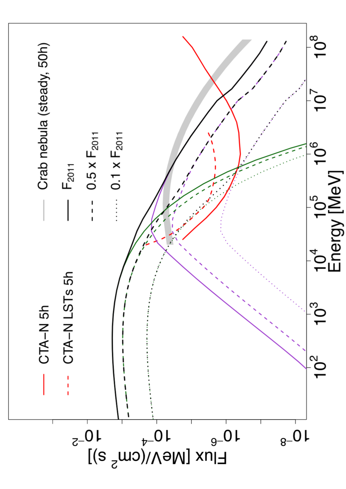
图注：Synchrotron (green), IC (purple), and total (black) model spectra of the Crab Nebula for different flare scenarios. The solid curves correspond to the model fitted to the 2011 April \(\textit{Fermi}-LAT\) flare above 80~MeV assuming a particle index of 2.5, while the dashed and dotted curves represent the same model rescaled by factors of 0.5 and 0.1, respectively. All models are computed for a magnetic field of 500~$\mu$G. The red solid and dashed lines indicate the CTAO-N sensitivity (full array and LST-only configuration, respectively, for 5~h integration). The grey shaded region shows the simulated steady Crab spectrum for 50~h CTAO-N observations (3$\sigma$) \(\cite{2025MNRAS.540..205A}.\)
对应解读：对应“建议检查论文中展示主要数据、模型比较、参数约束、残差或灵敏度预测的图表”，尤其是模型谱线、不同耀发情景与 CTAO-N 灵敏度预测。
入选理由：这张图同时包含同步辐射、IC 与总谱模型曲线，不同归一化情景，以及 CTAO-N 全阵列和 LST-only 灵敏度线，还给出稳态 Crab 模拟谱的阴影区域；最能支撑对极端伽马射线瞬变中粒子加速、辐射机制和未来探测能力的解读。
来源与置信度：\(arxiv_source\)；high；\(arxiv_source\) / \(DHadasch_extreme_transients_gamma.tex\):figure[5]
Fig02
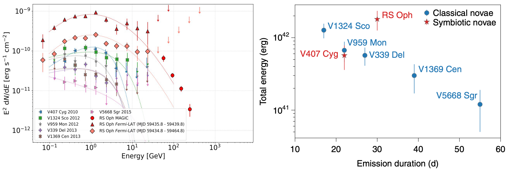
图注：\(\textit{Left:}\) Comparison of the spectrum from RS Ophiuchi with spectra of other \(\textit{Fermi}-LAT-detected\) novae. \(\textit{Right:}\) Total energy versus the duration of the RS Ophiuchi outburst compared to other novae detected with the \(\textit{Fermi}-LAT.\) Figures taken from \(\cite{2022NatAs...6..689A}.\)
对应解读：对应“建议检查论文中展示主要数据、模型比较、参数约束”的图表；用于解读 RS Ophiuchi 与其他 Fermi-LAT 新星的谱形和能量—持续时间关系。
入选理由：左图直接比较不同新星的 GeV 谱，右图给出总能量与爆发持续时间的参数空间位置，能够展示 RS Ophiuchi 在新星伽马射线瞬变中的极端性和样本对比价值。
来源与置信度：\(arxiv_source\)；high；\(arxiv_source\) / \(DHadasch_extreme_transients_gamma.tex\):figure[2]
Fig04
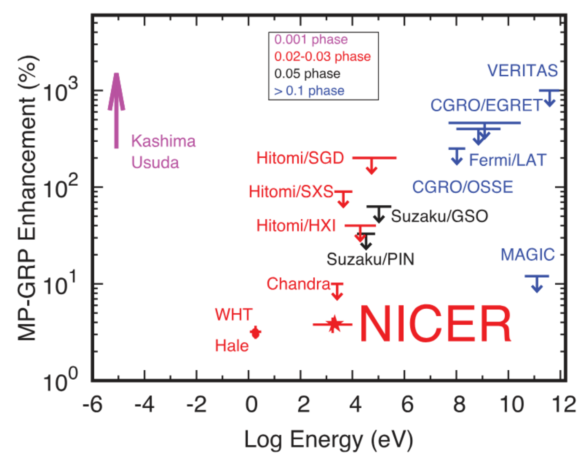
图注：The enhancement fraction associated with MP-GRPs as a function of photon energy. Optical measurements from WHT and the Hale telescope, together with NICER data, yield significant detections, whereas all other measurements in the X-ray and \(\graya\) bands correspond to upper limits (downward arrows). Magenta upward arrow: detection threshold of Kashima and Usuda radio observations. Figure taken from \(\cite{2021Sci...372..187E}.\)
对应解读：对应“关键图表逐图导读”中应重点查看坐标轴、样本选择、上限和系统约束的内容；展示 Crab 脉冲星巨射电脉冲相关增强随光子能量的变化。
入选理由：该图包含多波段测量、显著探测点和大量上限箭头，可用于判断不同能段中 MP-GRP 相关辐射增强是否存在，并体现观测约束随能量变化的诊断意义。
来源与置信度：\(arxiv_source\)；high；\(arxiv_source\) / \(DHadasch_extreme_transients_gamma.tex\):figure[4]
Fig01
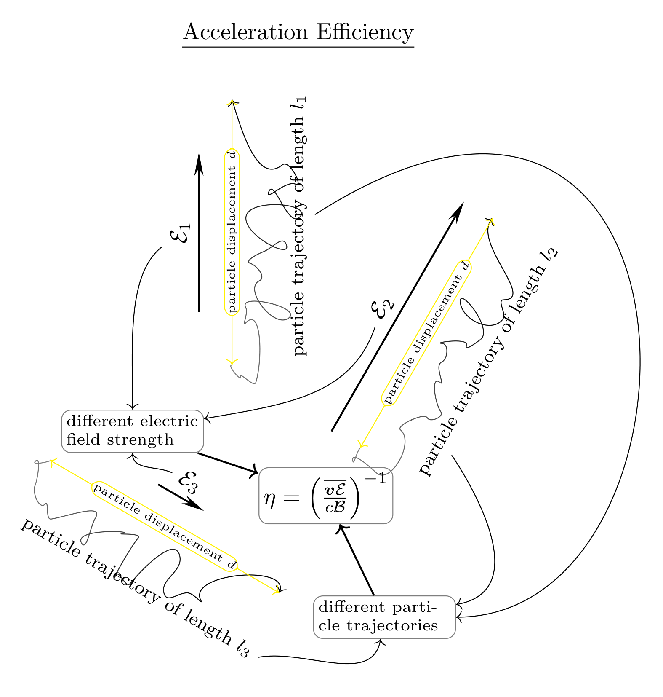
图注：A sketch that illustrates the factors contributing to the efficiency of the particle acceleration, often defined via a phenomenological parameter \(\eta\).
对应解读：对应论文中关于极端粒子加速效率和 phenomenological 参数 η 的理论诊断说明。
入选理由：虽然是示意图而非数据或拟合结果，但它概括了影响粒子加速效率的关键物理因素，有助于理解论文后续关于极端加速、冷却和紧致性的理论框架；科学支撑性弱于含观测数据和模型曲线的图。
来源与置信度：\(arxiv_source\)；high；\(arxiv_source\) / \(DHadasch_extreme_transients_gamma.tex\):figure[1]
强相关工作
相关工作可沿三条线检索。第一条是极端瞬变的基础观测线：Fermi-LAT 对 GRB、耀变体、新星和 Crab 耀发的发现论文与长期目录；AGILE 在 Crab 和部分瞬变中的早期结果；MAGIC、H.E.S.S.、VERITAS 对 GRB、RS Ophiuchi 和活动星系核快速耀发的 TeV 探测；HAWC/LHAASO 等广角阵列对长时或极亮高能瞬变的监测。这些工作提供本文综述中“哪些事件存在”的观测基础。
第二条是理论基础线：相对论喷流和 fireball/external shock 模型、扩散冲击加速、磁重联加速、同步辐射 burn-off limit、逆康普顿 Klein--Nishina 抑制、\(\gamma\gamma\) 紧致性约束、强子 \(pp/p\gamma\) 辐射与中微子关联。检索时可用关键词 “gamma-ray transients compactness Lorentz factor”, “synchrotron burnoff limit Crab flare”, “nova gamma rays shocks”, “magnetic reconnection particle acceleration relativistic plasmas”。
第三条是张力和反例线。Crab 星云耀发挑战经典稳态脉冲星风星云模型，因为短时标和高同步光子能量要求局部极端加速；新星中的 GeV--TeV 辐射要求冲击在相对低速抛射物中仍能高效加速粒子；GRB 的 TeV 探测要求内禀吸收、EBL 吸收和外激波/内区辐射解释相容；喷流分钟级 TeV 耀发挑战黑洞尺度、喷流截面和多普勒因子约束。阅读相关文献时应专门寻找“模型需要异常参数”的段落。
为了避免遗漏，建议从本文 bibliography 中反复出现的对象名和仪器名反向追踪：RS Ophiuchi、Crab Nebula flare、Crab giant radio pulses、Fermi-LAT novae、CTA/CTAO sensitivity、GRB TeV afterglow、blazar minute-scale variability 等。再用综述论文的引用链找近五年后续工作，特别是包含多波段联合拟合、上限重新分析、CTAO 预报和多信使约束的论文。
相似工作：
（未提供）
基础理论 / 方法工作：
（未提供）
相反观点 / 张力线索：
（未提供）
4. Insights on the Gamma-Ray Bursts variability in their cosmological rest frame
- 来源：arXiv / astro-ph.HE
- 链接：https://arxiv.org/abs/2605.31566v1
- 作者：Giovanni Della Casa, Fabrizio Fiore, Giuseppe Dilillo, Simonetta Puccetti, Andrea Vacchi
- 评分：novelty 7/10，importance 7/10，relevance 9/10，final 8.70/10
- 推荐理由：GRB毫秒级时变性及红移静止系分析，直接属于高能伽马暴方向；若样本和统计稳健，对中心引擎尺度和未来高时间分辨率任务有参考价值。
中文题目：Insights on the Gamma-Ray Bursts variability in their cosmological rest frame
做了什么：本篇论文已通过推荐筛选，但自动详细解读生成失败。可先根据题目和摘要判断阅读优先级：Gamma-ray bursts temporal profile can be extremely variable, going from a single pulse of a few seconds duration to multiple superimposed pulses occurring over tens or even hundreds of seconds. The variability displayed in the lightcurve of each gamma-ray burst can be the result of the activity taking place in the central engine that generates these violent phenomena, as well as due to magnetic reconnection activities at larger distances. The objective of this work is to find the shortest variability hidden in the lightcurves of the GRBs, with particular focus for the ones with measured redshift, on timescales as short as few milliseconds. This variability will then be related to physical characteristics of the central engine, and evidences of its relation with the spectral parameters of the burst, such as the isotropic energy and peak energy, will be presented. This research is even more relevant in view of the future generation of satellites with improved timing resolution, that will allow us to explore the possible variability in the microsecond region.
为什么重要：这篇论文在今日候选中通过了本地推荐阈值，说明它与当前高能天体物理兴趣方向或质量标准较匹配；详细内容建议优先查看原文摘要、结论和图表。
理论 / 观测 / 仪器方法价值：由于 LLM 摘要 JSON 解析失败，本节保留为安全占位，不编造论文未确认的公式、图号或链接。
为什么应该关注：日报仍保留这篇论文，是为了避免单篇摘要失败导致整份日报缺失。请把它作为需要人工快速复核的高优先级候选。
展开详细解读：文章讲解、背景、理论、重点章节、图表与相关工作
文章详细讲解
本文的科学问题可以概括为三层：第一，如何在 GRB 光变曲线中稳健地定义并测量最短变异时标；第二，红移校正后这些时标是否表现出宇宙学时间膨胀的预期行为；第三，MVT 是否与 \(E_{\rm iso}\)、\(E_{\rm peak}\) 等 prompt emission 的能量谱性质存在可解释的关系。摘要中特别强调毫秒尺度甚至未来微秒尺度，说明作者关心的是高时间分辨率观测能否打开中心引擎物理的新窗口。
方法上，Fig.1 是基础：它用 GRB080730B 展示两种 MVT 计算方法。左图的 Method 1 似乎通过识别某个统计量在初始线性阶段的终点来定义 MVT；右图的 Method 2 则通过初始线性段与后续较平坦段的交点来定义 MVT，并同时标出 \(3\sigma\) 泊松噪声阈值。读者应把这理解为“多尺度光变统计量的断点估计”，而不是直接在原始光变曲线中肉眼找最窄脉冲。
关键结果首先应从样本分布读起。Fig.3 给出 Method 1 下长暴和短暴的 MVT 分布，以及 MVT 与 \(T_{90}\) 的关系。绿色虚线 \(T_{90}=\Delta t_{\min}\) 是物理和测量的 sanity check：通常最短变异不应长于整体持续时间；少数点在误差范围内与该线相交，说明异常并不一定是物理反常，也可能是测量误差、低信噪比或持续时间估计不确定造成的。这个图决定了后续相关性分析是否建立在合理的时间尺度测量之上。
红移相关部分是题目的核心。Fig.7 把长暴按每组八个分箱并取几何平均，比较 \(1+z\) 与红移后的 MVT，同时给出最佳线性拟合、\(\Delta t_{\min}\sim1+z\) 参考虚线和 \(2\sigma\) 置信带。这里要特别核查横纵轴到底使用的是观测者系 MVT、红移后 MVT，还是某种 redshifted MVT 的定义，因为不同定义对应的理论斜率不同。若图中量已除以 \(1+z\)，则纯时间膨胀应被消去；若是观测者系量，则应随 \(1+z\) 增长。读者需以正文定义为准。
与能量谱参数的联系体现在 Fig.8 和 Fig.12。Fig.8 显示 \(E_{\rm iso}\) 对 MVT 的依赖，点大小与红移成比例，并标出三个低红移、观测者系为长暴但静止系为短暴的特殊事件。Fig.12 展示 \(E_{\rm peak}\) 与 MVT 的关系，同样编码红移。这里应重点判断相关性是否由少数高能、高红移或短 MVT 事件驱动，以及是否存在长短暴混合导致的双族群结构。
统计显著性不应只由散点图决定。Fig.11 给出 \(10^4\) 个人工 GRB 集合得到的相关系数分布，并用蓝色虚线标示真实样本的 Pearson 相关系数。这是一个重要诊断：若真实相关系数位于人工分布尾部，说明相关性不易由随机重排或某种空模型产生；若位于主体区域，则相关性可能不稳健。读者应核查人工样本如何构造：是否保持红移分布、能量分布、测量误差和探测阈值，决定了显著性检验的可信度。
局限性方面，MVT 的测量下限受探测器时间分辨率、有效面积和能段影响；不同卫星或不同数据产品的背景扣除和 binning 策略可能引入系统差异。物理解释上，MVT 与 \(E_{\rm iso}\)、\(E_{\rm peak}\) 的相关并不自动证明中心引擎尺度决定谱硬度，因为共同依赖红移、亮度选择和信噪比也会产生类似趋势。下一步可优先做三类修复：统一能段和谱模型的 K 校正；用层级贝叶斯模型同时拟合测量误差和选择函数；对未来高时间分辨率任务模拟微秒尺度下的可探测 MVT 分布。
背景知识
伽马暴（GRB）的时间结构长期以来就是理解中心引擎的入口之一。与超新星或活动星系核这类持续辐射源不同，GRB 的 prompt emission 往往在几毫秒到数百秒内释放巨大能量，光变曲线可以是一个平滑脉冲，也可以由许多尖锐子脉冲叠加而成。传统分类常用观测者系的 \(T_{90}\) 把 GRB 分成长暴和短暴，但这种分类并不等价于物理分类：红移、能段、探测器触发阈值、信噪比和谱演化都会改变观测到的持续时间与脉冲结构。
本文关注的是最短变异时标，通常可记为 \(\Delta t_{\min}\) 或 MVT（minimum variability timescale）。它不是简单地寻找最窄的单个脉冲，而是试图从多时间分辨率的光变曲线统计量中识别从真实天体变异主导到泊松噪声主导的转折尺度。这个量很重要，因为若 prompt emission 的快速结构确实追踪中心引擎活动，则 \(\Delta t_{\min}\) 可给出引擎尺度、喷流壳层厚度、内耗散半径或磁重联小尺度结构的约束。
题目中“cosmological rest frame”的核心含义是把观测者系时间尺度校正到源静止系。宇宙学时间膨胀使观测时间满足 \(\Delta t_{\rm obs}=(1+z)\Delta t_{\rm rest}\)。因此，对有红移的 GRB，若只在观测者系比较 MVT，可能把高红移源误认为天生变异更慢；反之，把时间除以 \(1+z\) 后，才能讨论中心引擎或辐射区的内禀时标。本文 Fig.7 直接用 \(1+z\) 与红移后的 MVT 做时间膨胀检验，是阅读时必须抓住的主线。
本文的另一条主线是把 MVT 与谱能量参数联系起来，例如各向同性等效能量 \(E_{\rm iso}\) 和谱峰能量 \(E_{\rm peak}\)。如果更短的内禀变异对应更紧致、更高洛伦兹因子或更高磁化的喷流，那么 MVT 可能与 \(E_{\rm iso}\)、\(E_{\rm peak}\) 出现经验相关。但这类关系很容易受选择效应影响：亮暴更容易在短时间 bin 中有足够信噪比，高红移暴的低信噪比和能段迁移会抹平短时标，短暴/长暴混合也会制造表观相关。
一个常见误区是把 MVT 直接等同于中心黑洞或磁星的动力学时间。实际上，观测到的最短时间尺度是中心引擎、喷流传播、辐射半径、相对论几何效应、探测器时间分辨率和计数噪声共同卷积后的结果。另一个误区是认为只要做 \((1+z)\) 校正就获得了“真实”时标；实际上还应检查能段 K 校正、不同卫星响应、binning 方法、触发选择和样本截断。本文的贡献应在这些限制下理解：它给出一种在毫秒尺度寻找隐藏变异并与红移和谱参数比较的实证框架。
基础理论 / 方法脉络
从物理图像看，GRB prompt emission 的快速起伏可以来自中心引擎间歇喷发，也可以来自喷流内部的能量耗散过程。若中心引擎在相邻时间 \(\delta t\) 内喷出不同速度的壳层，壳层碰撞或磁能释放会在光变曲线上留下相近量级的结构。若辐射区位于大半径，曲率效应会把过快的内禀变化平滑掉，因此最短可见变异时标同时包含引擎时钟和辐射几何信息。
观测上，GRB 的 prompt 光变曲线是离散计数序列。给定时间 bin \(\Delta t\)，每个 bin 内的计数近似服从泊松统计，真实源变异会使相邻 bin 之间的方差超过纯噪声预期。许多 MVT 方法的思想是：逐渐改变时间分辨率，计算某种“结构函数”、方差或相邻差分统计量；在较大 \(\Delta t\) 时真实结构主导，统计量随 \(\Delta t\) 呈近似幂律或线性趋势；在很小 \(\Delta t\) 时泊松噪声主导，趋势变平或落到噪声阈值以下。Fig.1 展示的两种方法正是在寻找这个转折点。
源静止系校正是本文与一般光变分析相比的关键步骤。对于红移为 \(z\) 的 GRB，观测者系最短变异时标 \(\Delta t_{\min,obs}\) 与静止系时标的最基本关系是 \(\Delta t_{\min,rest}=\Delta t_{\min,obs}/(1+z)\)。若样本足够理想，观测者系的 MVT 应随 \(1+z\) 呈正相关；但若测量阈值、能段迁移或亮度选择占主导，相关斜率可能偏离纯时间膨胀预期。Fig.7 中的虚线 \(\Delta t_{\min}\sim 1+z\) 和最佳拟合线就是用来比较这两种情况。
连接到能量谱参数时，\(E_{\rm iso}\) 通常由观测流 fluence、光度距离和 K 校正得到，而 \(E_{\rm peak}\) 是 \(\nu F_\nu\) 谱的峰值能量。若论文使用文献给出的红移和谱拟合参数，读者应检查这些参数是否来自同一能段、同一宇宙学参数和同一谱模型。MVT 与 \(E_{\rm iso}\)、\(E_{\rm peak}\) 的散点图不应只看相关系数，还要看红移编码、长短暴子样本、离群点、低信噪比截断以及是否对共同依赖 \(z\) 做过控制。
理论上可把 MVT 解释为对辐射区尺度的上限。若变异由半径 \(R\) 处相对论喷流的角向时间控制，则 \(\Delta t\sim R/(2c\Gamma^2)\)；若由中心引擎控制，则 \(c\Delta t_{\rm rest}\) 给出引擎活动尺度的量级。二者在观测上可能退化，因为更大的 \(R\) 可以被更大的 \(\Gamma\) 抵消。本文若只基于时间序列和谱参数，通常不能唯一判定中心引擎与磁重联哪一种机制占主导，而应把相关性视为对模型的约束线索。
公式与推导
可以从宇宙学时间膨胀开始建立本文的量纲框架。源静止系和观测者系时间间隔满足
这里 \(z\) 是红移，\(\Delta t_{\rm obs}\) 是仪器记录到的时间尺度，\(\Delta t_{\rm rest}\) 是 GRB 源静止系时间尺度。对 MVT 而言，最直接的校正为
这是讨论中心引擎物理前必须做的第一步，但它没有自动校正能段迁移和探测阈值。
光变曲线可写成离散计数序列。对时间 bin \(i\) 和 bin 宽 \(\Delta t\)，观测计数可表示为
其中 \(S_i\) 是源计数，\(B_i\) 是背景计数。若背景已估计并扣除，净计数率近似为
在泊松近似下，计数方差满足 \(\sigma_{C_i}^2\simeq C_i+B_i\) 或依赖具体背景估计方式的相近形式，因此当 \(\Delta t\) 过小时，噪声项会迅速主导相邻 bin 的差异。
一种通用的多尺度变异统计量可用相邻差分方差表示为
真实变异与泊松噪声可概念性分解为
其中 \(V_{\rm P}\) 是由计数噪声给出的期望噪声底。Fig.1 中的 \(3\sigma\) Poisson noise threshold 就是在判定某些时间尺度上统计量是否已低于可靠源变异检测阈值。
若在某个尺度范围内源变异近似呈幂律，可写作
其中 \(A\) 是归一化，\(\alpha\) 是斜率，\(\Delta t_0\) 是参考时间。Method 1 可理解为寻找这种线性或幂律阶段结束的时间尺度；Method 2 可理解为把初始斜率段与后续平坦段拟合后求交点。若平坦段近似为 \(V_{\rm flat}\)，则交点满足
从而
这不是论文唯一可能采用的精确定义，但给出了读 Fig.1 时应核查的数学结构：斜率、平台和断点。
若把 MVT 与辐射半径联系起来，相对论曲率时间给出常用尺度关系
其中 \(R\) 是辐射半径，\(\Gamma\) 是喷流 bulk Lorentz factor。若观测到的最短静止系时标由角向时间主导，则可估计
若由中心引擎活动主导，则 \(c\Delta t_{\min,\rm rest}\) 给出引擎活动尺度的量级上限，而不是唯一尺度。
能量参数方面，各向同性等效能量常由 fluence 推得：
其中 \(d_L\) 是光度距离，\(S_{\rm bol}\) 是经过能段校正后的 bolometric fluence。谱峰能量的静止系校正常写为
因此 MVT 与 \(E_{\rm iso}\)、\(E_{\rm peak}\) 的相关性天然可能含有共同的 \(z\) 依赖，必须用控制红移、人工样本或层级模型检查。
若做经验相关拟合，常用 log-log 线性形式
其中 \(Y\) 可为 \(E_{\rm iso}\) 或 \(E_{\rm peak,rest}\)，\(t_0\) 是归一化时间，\(\epsilon\) 是内禀散布。对应高斯误差似然可写为
读者可用这个形式检查论文中的相关性是否考虑了横纵轴误差和内禀散布，而不只是报告 Pearson 系数。
模型拟合 / 应用方法
本文的拟合对象主要有两类：第一类是从光变曲线多时间尺度统计量中拟合 MVT；第二类是把得到的 MVT 与红移、\(T_{90}\)、\(E_{\rm iso}\)、\(E_{\rm peak}\) 等物理量做相关性或线性拟合。前者决定横轴或核心自变量的可靠性，后者决定物理解释是否站得住。读者应把 MVT 误差视为后续所有相关性分析的输入误差，而不是可忽略的预处理细节。
对 MVT 拟合，Fig.1 暗示的模型是分段行为：在某些时间尺度上统计量近似线性或幂律，在更小或更大尺度上趋于平台或受泊松噪声支配。拟合量至少包括初始段斜率、截距、平台水平或断点位置。诊断上应查看：线性段选择是否主观；改变拟合区间时 MVT 是否稳定；Method 1 和 Method 2 是否存在系统偏移；低计数事件是否更容易被 \(3\sigma\) 噪声阈值截断。
对红移时间膨胀拟合，常见形式是在 log-log 或线性空间中拟合 \(\Delta t_{\min}\) 与 \(1+z\) 的关系。若理论检验是 \(\Delta t_{\rm obs}\propto(1+z)\)，斜率和归一化应与纯时间膨胀参考线比较；若使用静止系 MVT，则应检查残余斜率是否与零一致。Fig.7 的分箱和几何平均会降低视觉散布，但也可能掩盖样本内异质性，因此最好同时查看未分箱散点和残差随 \(z\) 的变化。
对 \(E_{\rm iso}\)–MVT 和 \(E_{\rm peak}\)–MVT 相关性，若论文只报告 Pearson 相关系数，读者应进一步要求 Spearman 等级相关、误差传播、离群点剔除测试和控制红移的 partial correlation。Fig.11 的 \(10^4\) 人工集合是一个有价值的显著性检验，但其有效性完全取决于空模型构造。若人工集合没有保留观测选择函数、探测阈值和测量误差，真实相关系数落在尾部也不一定意味着物理相关。
参数退化主要来自三方面。第一，红移同时影响时间校正、能量估计和谱峰静止系校正，容易制造共同变量相关。第二，信噪比影响 MVT 探测下限，而高 \(E_{\rm iso}\) 暴通常更亮、更容易测到短时标。第三，长暴/短暴以及观测系/静止系分类不同会改变样本组成，Fig.8 标出的三个特殊低红移事件就是这种退化的提醒。稳健做法是分别拟合长暴、短暴和边界事件，并比较斜率是否一致。
系统误差还包括探测器时间分辨率、能量响应、背景估计、触发前后数据截取窗口和不同数据源的校准差异。若未来任务把时间分辨率推进到微秒，统计误差未必自动降低，因为微秒 bin 内计数可能很少，泊松噪声和死时间效应会更重要。因此论文关于未来卫星的展望应与灵敏度模拟一起阅读：微秒 MVT 的可探测性取决于有效面积、死时间、背景、能段和 burst 亮度函数，而不只是采样时间。
重点章节 / 结果段落怎么读
-
Introduction：重点找作者如何定义“variability”和“minimum variability timescale”，以及他们把 MVT 连接到中心引擎、磁重联或辐射半径的哪一种物理图像。还要记录前人对 GRB 时间膨胀、MVT–luminosity 或 MVT–谱参数关系的结论是否一致。
-
Data/sample section：逐项核查样本来源、是否只包含有红移 GRB、长暴/短暴分类标准、使用的仪器数据类型和时间分辨率。特别要看红移、\(E_{\rm iso}\)、\(E_{\rm peak}\) 是否来自同一文献汇编或不同来源混合；若混合，系统误差会进入相关性分析。
-
MVT calculation methods：这是技术核心。应对照 Fig.1 读清楚 Method 1 与 Method 2 的差异：线性阶段如何拟合，平台如何定义，泊松噪声阈值如何计算，MVT 误差如何估计。建议把每个方法写成“输入光变曲线—重 bin—计算统计量—拟合斜率/断点—输出 MVT”的流程图。
-
Observer-frame results：先不要急着解释物理，先看观测者系 MVT 的分布和与 \(T_{90}\) 的关系。Fig.3 这类图用于确认测量值是否合理、长短暴是否分离、是否存在 MVT 大于持续时间的异常点。这里的异常点往往决定后续拟合是否需要稳健回归或离群点处理。
-
Rest-frame/redshift section：重点阅读 \((1+z)\) 校正的定义和 Fig.7 的拟合。要分清作者是在检验观测者系 MVT 随红移伸长，还是在比较静止系 MVT 是否仍随红移残留相关。若有分箱，记录每箱样本数、均值类型和误差估计。
-
Correlations with spectral parameters and discussion：对照 Fig.8、Fig.11、Fig.12 阅读。重点不是“有没有相关”，而是相关性在控制红移、长短暴分类、人工样本和测量误差后是否仍然存在。讨论部分中若把相关性解释为中心引擎尺度或喷流物理，应检查是否同时承认了选择效应和模型退化。
建议重点查看的图表
-
MVT 方法示意图（如 Fig.1）：检查纵轴统计量的定义、横轴时间尺度是否为对数坐标、线性阶段如何选取、断点或交点如何定义，以及 \(3\sigma\) 泊松噪声阈值是否真的限制了最小可测时标。
-
MVT 分布与 \(T_{90}\) 关系图（如 Fig.3）：分别看长暴和短暴的分布是否重叠，是否存在接近或超过 \(T_{90}=\Delta t_{\min}\) 的异常点，误差条是否足以解释异常，以及 Method 1/Method 2 是否给出一致分布。
-
红移/时间膨胀检验图（如 Fig.7）：核查横轴是 \(1+z\)，纵轴是观测者系 MVT、静止系 MVT 还是 redshifted MVT；比较最佳拟合线与 \(\Delta t_{\min}\sim1+z\) 参考线；看 \(2\sigma\) 置信带是否覆盖理论斜率。
-
\(E_{\rm iso}\)–MVT 图（如 Fig.8）：看坐标是否为 log-log，点大小编码红移是否造成视觉偏置，三个观测系长暴但静止系短暴的低红移事件是否支配趋势，以及是否区分长暴/短暴子样本。
-
\(E_{\rm peak}\)–MVT 图（如 Fig.12）：检查 \(E_{\rm peak}\) 是观测者系还是静止系，误差条是否给出，相关是否被红移或谱模型选择驱动，并比较与 Amati/Yonetoku 类关系可能存在的共同变量。
-
人工样本相关系数分布图（如 Fig.11）：看真实 Pearson 相关系数在 \(10^4\) 个人工集合分布中的位置；重点核查人工集合是否保留样本大小、红移分布、误差分布和选择截断，否则显著性可能被高估。
-
方法对比或残差图：若正文包含 Method 1 与 Method 2 的 MVT 对比，应检查系统偏移、离群点和低信噪比区域；若没有显式残差图，读者应自行关注拟合残差是否随红移、亮度或 \(T_{90}\) 呈结构性变化。
关键图表逐图导读
图 1：这是理解全篇的入口图。横轴应是测试的时间尺度或 binning 尺度，纵轴是用于表征光变差异的统计量；左图 Method 1 用橙色线标出初始线性阶段，红点表示该阶段结束处，即 MVT；右图 Method 2 用红线表示初始线性段，之后出现较平坦阶段，二者交点为 MVT。三角形代表 \(3\sigma\) 泊松噪声阈值下的受限尺度。读图陷阱是把红点理解为某个真实脉冲宽度；更准确地说，它是统计量从源变异主导转向噪声/平台主导的断点估计。
图 3：左图给出 Method 1 得到的长暴和短暴 MVT 分布，右图给出 MVT 与 \(T_{90}\) 的关系。横纵轴若为对数坐标，应关注不同族群是否平行偏移、是否存在长短暴重叠区。绿色虚线 \(T_{90}=\Delta t_{\min}\) 是重要参照：在其上方的点表面上意味着最短变异长于整个 burst，但图注说明这些点的双轴误差条与虚线相交，因此不应过度解释为物理异常。真正需要关注的是这些点是否集中在低信噪比、短 \(T_{90}\) 或特定仪器数据中。
图 7：该图检验时间膨胀，是题目“rest frame”的核心证据图。横轴是 \(1+z\)，样本为长 GRB，并按每组八个做 binning，使用几何平均；黑色实线是最佳线性拟合，黑色虚线是 \(\Delta t_{\min}\sim1+z\) 关系，阴影为 \(2\sigma\) 置信区间。读者应首先确认纵轴“redshifted MVT”的定义，因为若纵轴是观测者系 MVT，虚线代表纯宇宙学时间膨胀；若纵轴已经校正到静止系，则理论预期应接近无红移趋势。陷阱是只看拟合线斜率而忽略分箱会压低散布、几何平均会改变离群点权重。
图 8：该图展示 \(E_{\rm iso}\) 与 MVT 的关系，圆点大小与红移成比例，红色圆圈标出三个 \(z<2\) 且观测者系分类为长暴、静止系分类为短暴的事件。读图时应看相关方向、散布、红移大小是否沿图中某一方向系统变化，以及红圈事件是否改变总体趋势。若高 \(E_{\rm iso}\) 点也通常有高红移和更好的信噪比，MVT 的测量下限可能与能量共同受选择效应控制。
图 11：这是相关性可靠性的统计诊断图。横轴应为人工 GRB 集合得到的 Pearson 相关系数，纵轴为出现次数或概率密度；蓝色虚线是真实样本的 Pearson 值。若蓝线位于人工分布尾部，相关性较不容易由空模型产生；若在主体内，则相关性证据较弱。关键陷阱是人工样本的生成方式：随机打乱参数、从边缘分布抽样、还是模拟探测选择，会给出非常不同的基准分布。
图 12：该图展示 \(E_{\rm peak}\) 与 MVT 的关系，marker 大小同样编码红移。应核查 \(E_{\rm peak}\) 是否为静止系值，是否有谱拟合误差，长暴和短暴是否混合，以及散点是否可能反映 Amati 类 \(E_{\rm peak}\)–\(E_{\rm iso}\) 关系的投影。若图中没有残差或置信带，读者应在正文寻找 Pearson/Spearman 系数、p 值或人工样本检验来支撑视觉相关。
论文原图 / 可嵌入图片
Fig07
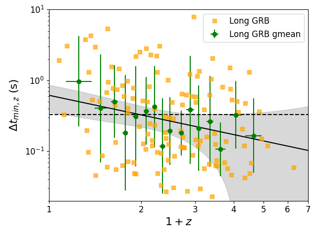
图注：Study of the time dilation through the correlation between $1+z$ and the redshifted MVT for long GRBs, binning them by groups of eight and using the geometrical mean. The black solid line represents the best linear fit, while the dashed black line corresponds to the $\Delta t_{min} \sim 1+z$ relation. The shadowed region individuates the $2\sigma$ confidence region around the fit.
对应解读：建议重点查看的图表：时间膨胀检验、模型线与置信区间；关键图表逐图导读中应重点核对坐标轴、最佳拟合线、理论关系线和2σ置信带。
入选理由：这张图直接检验论文题目中的“宇宙学静止系”核心问题：用长暴样本比较1+z与红移后的最短变异时标，包含最佳线性拟合、Δt_min∼1+z参考关系以及2σ置信区间，是判断是否观测到宇宙学时间膨胀的关键证据。
来源与置信度：\(arxiv_source\)；high；\(arxiv_source\) / main.tex:figure[7]
Fig08
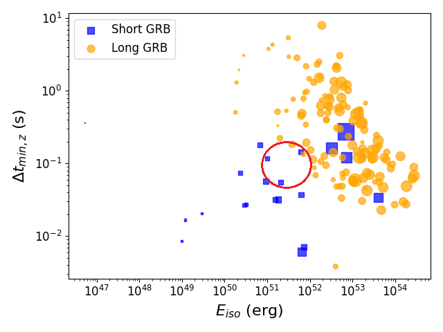
图注：Display of the dependence on the isotropic energy on the MVT. The dimension of the circles is proportional to the redshift of the GRB. The red circle indicates three GRBs at redshift lower than 2 that are classified as long in the observer frame but short in the cosmological rest frame.
对应解读：建议重点查看的图表：MVT与谱/能量参数的关系；对应摘要中提到的最短变异时标与各向同性能量E_iso之间的联系。
入选理由：该图展示各向同性能量与最短变异时标的依赖关系，并用点大小编码红移、标出观测系长暴但静止系短暴的特殊低红移事件，是连接时间结构与物理能量尺度的核心结果图。
来源与置信度：\(arxiv_source\)；high；\(arxiv_source\) / main.tex:figure[8]
Fig12
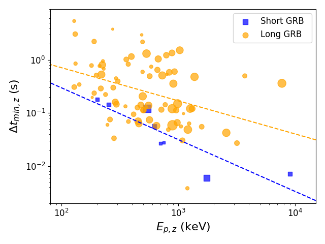
图注：Display of the relation between the peak energy and the MVT. The dimension of the markers is proportional to the redshift of the GRB.
对应解读：建议重点查看的图表：MVT与谱峰能量E_peak的相关性；对应摘要中提到的与谱参数的证据。
入选理由：论文摘要明确强调最短变异时标与谱参数如峰值能量的关系，Fig12正是E_peak–MVT关系图，并编码红移信息，适合支撑对中心引擎时间尺度与辐射谱性质关联的解读。
来源与置信度：\(arxiv_source\)；high；\(arxiv_source\) / main.tex:figure[12]
Fig01
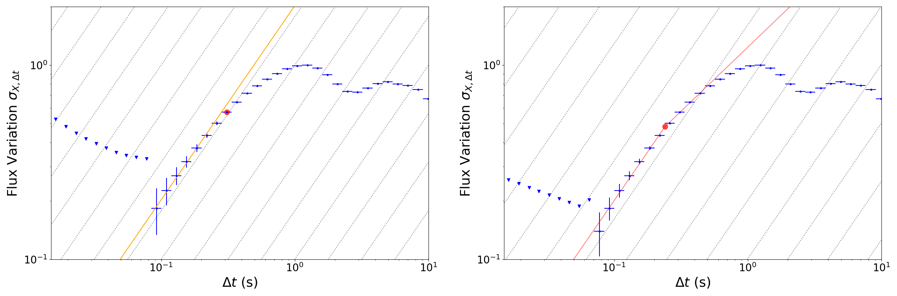
图注：Example of MVT calculation for GRB080730B, using the two methods. \(\textit{Left image}\): method 1, the orange line corresponds to the best fit of the linear phase. The red dot shows the timescale corresponding to the end of the linear phase, i.e. the MVT. \(\textit{Right image}\): method 2, The red line shows the initial linear phase, followed by a flatter phase, with the intersection highlighted by the red dot. The triangles represent the $3\sigma$ Poisson noise threshold for the timescales where $\sigma_{X,\Delta t}$ is lower than this limit. In the case presented here the results are very similar, but they can differ as illustrated in Sect.~\(\ref{subsec:obs_frame}.\) The black dotted lines help the eye to identify the power-law scaling.
对应解读：关键图表逐图导读：MVT计算方法示例；模型拟合段落中需要核对线性阶段、Poisson噪声阈值和两种方法的定义。
入选理由：这是论文测量量Δt_min/MVT的基础方法图，展示两种计算方法、线性阶段拟合、拐点/交点以及3σ Poisson噪声阈值。没有这张图很难理解后续所有相关性图中的MVT是如何得到的。
来源与置信度：\(arxiv_source\)；high；\(arxiv_source\) / main.tex:figure[1]
Fig03
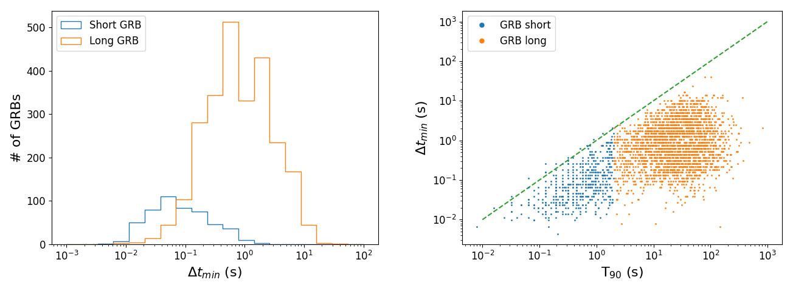
图注：MVT computed with Method 1. \(\textit{Left image}\): distribution of the MVT for both long and short GRBs. \(\textit{Right image}\): MVT versus the T90 for long and short GRBs. The dashed green line represents the $T_{90} = \Delta t_{min}$ relation. The errorbars on both x and y axes of the few points above this line intersect with this line justifying the fact that the $\Delta t_{min}$ is apparently longer than the burst itself.
对应解读：建议重点查看的图表：主要数据分布与MVT相对于T90的诊断；用于区分长暴和短暴样本的基本观测结果。
入选理由：该图给出Method 1得到的MVT分布以及MVT与T90的关系，包含长暴/短暴对比和T90=Δt_min参考线，是理解样本整体时间尺度、异常点和分类边界的重要基础图。
来源与置信度：\(arxiv_source\)；high；\(arxiv_source\) / main.tex:figure[3]
Fig11
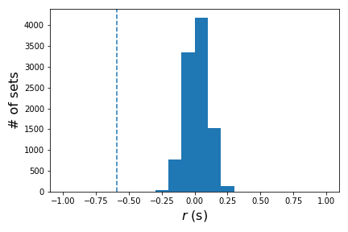
图注：Distribution of the correlation values obtained for the $10^4$ artificial sets of GRBs. The blue dashed line correspond to Pearson correlation factor that was obtained with the real set of GRBs.
对应解读：模型拟合/统计显著性检查：人工GRB集合的相关系数分布与真实样本Pearson相关系数比较。
入选理由：这张图提供对相关性显著性的统计诊断，用10^4个人工样本的相关系数分布与真实样本进行比较，比单纯散点图更能评估E_iso–MVT等关系是否可能由选择效应或随机样本产生。
来源与置信度：\(arxiv_source\)；high；\(arxiv_source\) / main.tex:figure[11]
强相关工作
相关工作可沿三条线索检索。第一是 GRB prompt emission 时间变异性与最短变异时标的测量方法，包括基于结构函数、功率谱密度、小波、Bayesian blocks、脉冲分解和多时间 bin 方差的方法。检索关键词可用 “GRB minimum variability timescale”, “GRB temporal variability”, “prompt emission light curve structure function”, “GRB power density spectrum”。这条线帮助判断本文 Method 1/Method 2 与既有 MVT 定义是否等价，以及不同方法之间的系统偏差。
第二是宇宙学时间膨胀在 GRB 中的观测检验。早期研究曾尝试用持续时间、脉冲宽度、谱滞后和亮度分组寻找 \((1+z)\) 拉伸，但结果常受亮度选择、能段依赖和触发阈值影响。本文 Fig.7 属于这条传统问题的新版本：用最短变异时标而非整体持续时间检验红移伸长。阅读时应比较前人是否发现高红移 GRB 在观测者系更宽、静止系是否仍有残余演化。
第三是时间变异性与能量谱参数的经验关系。GRB 文献中已有 Amati 关系（\(E_{\rm peak}\)–\(E_{\rm iso}\)）、Yonetoku 关系（\(E_{\rm peak}\)–峰值光度）以及 variability–luminosity 类关系。本文把 MVT 与 \(E_{\rm iso}\)、\(E_{\rm peak}\) 连接起来时，应检查它是否提供独立信息，还是这些已知关系和共同红移依赖的投影。检索关键词可用 “GRB variability luminosity relation”, “minimum variability timescale Eiso”, “GRB Epeak variability”。
潜在张力线索包括：不同仪器样本得到的 MVT 分布是否一致；长暴和短暴是否应使用同一 MVT–能量关系；低红移、观测者系长暴但静止系短暴的事件是否挑战传统 \(T_{90}=2\) s 分类；以及磁重联模型和内激波/中心引擎间歇模型对最短时间尺度的预测是否可区分。建议从本文 bibliography 中反复出现的作者和关键词向前追溯，再用最新综述或高能任务白皮书查看未来微秒时间分辨率观测的可行性。
相似工作：
（未提供）
基础理论 / 方法工作：
（未提供）
相反观点 / 张力线索：
（未提供）
5. Magnetic Eruption and Nucleosynthesis in GRνMHD Simulations of Spinning Neutron Star Mergers
- 来源：arXiv / astro-ph.HE
- 链接：https://arxiv.org/abs/2605.30548v1
- 作者：Allen Wen, Jay V. Kalinani, Michail Chabanov, Manuela Campanelli, Riccardo Ciolfi, Yosef Zlochower
- 评分：novelty 7/10，importance 8/10，relevance 8/10，final 8.70/10
- 推荐理由：含中微子输运的GRMHD双中子星并合模拟，研究自旋对磁喷发、外流、核合成和短GRB可行性的影响；对致密并合多信使模型有较高价值。
中文题目：自旋中子星并合的广义相对论中微子磁流体模拟：磁爆发与核合成
做了什么：这篇论文用三维广义相对论磁流体力学加二阶矩中微子输运模拟了等质量双中子星并合后长寿命遗迹的早期演化，比较无自旋、双星自旋与轨道角动量同向、双星自旋与轨道角动量反向三种情形。核心发现是：初始自旋不只是改变并合时刻和角动量预算，还会显著改变潮汐抛射物、磁场放大、极向磁驱风和中微子重处理，从而影响出流的电子丰度 \(Y_e\) 与 \(r\) 过程核合成。同向自旋产生更多冷的、富中子的赤道潮汐抛射物，同时有利于更准直的极向磁性喷发；反向自旋导致更剧烈碰撞和更多碎屑污染，反而阻碍磁驱风传播。论文还指出无自旋和同向自旋模型中可出现约 \(2.4\times10^{-3}\,M_\odot\) 的近质子丰度物质 \(Y_e\geq0.49\)，可合成轻 \(r\) 过程元素和 \(^{56}\mathrm{Ni}\)，但这些出流仍太慢、太稠密，难以直接解释典型短伽马暴喷流。
为什么重要：双中子星并合的电磁对应体通常被分成千新星、短伽马暴和余辉几类，但这些信号实际上都对并合后几十毫秒到数百毫秒内的磁场、中微子和动力学出流极其敏感。初始中子星自旋过去常被简化为无自旋或近似无自旋；这篇工作说明，即使在等质量系统中，星体自旋方向也能改变磁爆发是否顺利、喷流环境是否被重子污染、以及出流核合成是否偏向轻元素或重 \(r\) 过程。这对解释 \(GW170817\) 类事件的多信使信号、预估未来引力波事件的电磁多样性，以及判断长寿命中子星遗迹能否作为短伽马暴中央引擎都很关键。
理论 / 观测 / 仪器方法价值：理论价值在于把自旋、强磁场、中微子重处理和核合成放进同一个三维广义相对论框架中比较，给出了自旋方向影响出流成分和形态的物理链条。观测价值在于提示近质子丰度出流和 \(^{56}\mathrm{Ni}\) 衰变可能给长寿命遗迹产生一种区别于普通红/蓝千新星的附加电磁成分。方法价值在于使用二阶矩中微子输运而非简单泄漏方案，更适合评估极向区域的 \(Y_e\) 重处理；同时也展示了判断短伽马暴可行性时不能只看是否有极向磁场，还必须看重子加载、速度和准直程度。
为什么应该关注：如果你关注多信使天文学，这篇文章给出一个直接信息：并合前自旋方向可能是电磁对应体差异的重要隐藏变量。如果你做数值相对论，它展示了长寿命遗迹中磁爆发与中微子输运耦合的一个具体案例。如果你研究核合成，它强调极向高 \(Y_e\) 物质并非只由盘风决定，磁驱出流与中微子照射共同塑造轻元素和 \(^{56}\mathrm{Ni}\) 产额。如果你研究短伽马暴，它也提醒：一个有磁性极向出流的遗迹并不自动等于成功的相对论喷流。
展开详细解读：文章讲解、背景、理论、重点章节、图表与相关工作
文章详细讲解
科学问题：双中子星并合后的长寿命中子星遗迹是否能同时解释短伽马暴中央引擎、千新星出流和 \(r\) 过程核合成，取决于并合后几十毫秒内的磁场放大、角动量再分配、中微子照射和重子污染。论文关注一个常被简化但物理上重要的变量：并合前中子星自旋。对于等质量系统，自旋与轨道角动量同向会增加总角动量并改变潮汐剥离；自旋反向则降低有效角动量并增强碰撞的径向剧烈程度。作者要回答的是：这种初始自旋差异会不会在并合后遗迹、磁性喷发、出流成分和核合成中留下可观测后果。
作者怎么做：论文进行了三维广义相对论磁流体力学模拟，并包含二阶矩中微子输运，跟踪等质量双中子星并合后长寿命遗迹的形成与早期演化。模型包括一个基准无旋或近似无旋双星，以及自旋与轨道角动量同向和反向的模型。模拟比较了并合动力学、磁场增长、遗迹和内盘结构、不同角区的物质抛射、极向磁驱风传播，以及随后基于出流轨迹的核合成产额。二阶矩中微子方案的作用尤其重要，因为极向出流的电子丰度 \(Y_e\) 很容易被 \(\nu_e\) 和 \(\bar\nu_e\) 吸收重新设定。
关键结果：同向自旋模型相对于无旋基准释放更多冷的、富中子的赤道潮汐抛射物。这类物质主要在赤道面向外扩展，保留较低 \(Y_e\)，有利于重 \(r\) 过程；同时遗迹和内盘上方形成更清洁、更有组织的磁性极向通道，使极向出流更紧密准直。反向自旋模型则在接触并合时发生更剧烈碰撞，破坏或推迟磁场有序放大，并把更多碎屑加载到极区周围，使磁驱风更难穿透。无旋和同向自旋情形中，极向出流受到强中微子重处理，产生总量约 \(2.4\times10^{-3}\,M_\odot\) 的近质子丰度物质 \(Y_e\geq0.49\)，可合成轻 \(r\) 过程元素并包括 \(^{56}\mathrm{Ni}\)。
局限和下一步：摘要已明确指出，虽然存在磁性极向喷发，但出流仍过于稠密且速度偏低，不能自然对应典型短伽马暴所需的超相对论、低重子污染喷流。因此这项工作更像是在界定长寿命遗迹磁驱风和核合成的可行范围，而非宣称成功产生短伽马暴。需要注意的是，结果可能依赖初始磁场强度与拓扑、核物质状态方程、质量比、总质量、模拟持续时间、中微子闭合关系和数值分辨率。下一步值得扩展到不等质量、不同自旋大小、不同状态方程和更长时间尺度，以判断 \(^{56}\mathrm{Ni}\) 信号是否稳健，以及磁爆发是否能在后续演化中转变成更快、更低重子污染的喷流。
背景知识
双中子星并合是引力波和电磁多信使天文学的核心源类。并合后系统可能迅速塌缩为黑洞，也可能形成短寿命、亚稳态或长寿命的高质量中子星遗迹。不同结局决定了吸积盘质量、极向环境、磁场结构和中微子辐射场，从而影响短伽马暴、千新星和 \(r\) 过程元素产额。\(GW170817\) 之后，一个关键问题是：蓝色早期千新星、红色晚期千新星和弱短伽马暴之间的组合，到底需要怎样的中央引擎和出流结构。
历史上，数值相对论并合模拟常先从无自旋或低自旋双中子星做起，因为银河系已知双中子星在并合前的可观自旋预期不高，且无自旋模型参数空间较小。但这不意味着自旋可以完全忽略。自旋通过改变总角动量、潮汐尾形成、接触时剪切强度和遗迹差分旋转，可能影响磁旋转不稳定、Kelvin-Helmholtz 放大、中微子亮度和出流路径。尤其在长寿命遗迹中，小的初始差异可能被磁场和流体不稳定性放大。
观测背景也在推动重新审视这个问题。未来 LIGO-Virgo-KAGRA、Einstein Telescope、Cosmic Explorer 以及高能和光学巡天会发现更多双中子星事件，但电磁对应体多样性很可能很大。若自旋方向能改变极向重子污染和核合成成分，那么同样的总质量和质量比也可能给出不同颜色、不同峰值时间和不同高能信号。把自旋纳入模板和解释框架，有助于避免把所有差异都归因于状态方程或视角。
该领域一个常见误区是把“有强磁场极向结构”等同于“能产生短伽马暴喷流”。真正的短伽马暴需要高洛伦兹因子、低重子污染、足够能量通量和稳定准直；如果极向区域装载了太多重子，即使磁压很强，也可能只产生亚相对论或弱相对论风。另一个误区是把 \(Y_e\) 只看作初始冷中子星物质属性；实际上并合后中微子吸收能快速提高极向物质的 \(Y_e\)，使同一动力学出流在核合成上从重 \(r\) 过程转向轻元素甚至近铁峰成分。
基础理论 / 方法脉络
基本物理图像可以从角动量和能量分配开始。两颗中子星并合时，轨道角动量、星体自旋角动量和内部流体涡量共同决定接触后的差分旋转。差分旋转一方面支撑超大质量或长寿命遗迹，另一方面通过缠绕磁场、磁旋转不稳定和湍流把动能转化为磁能。若磁压在极向区域逐渐占优，就可能驱动沿旋转轴方向的出流；但这个出流是否能加速到相对论速度，取决于单位重子携带的电磁能量和周围物质污染。
中微子物理决定了出流的电子丰度 \(Y_e\)。在热而致密的遗迹和内盘中，电子和正电子俘获产生 \(\nu_e\) 与 \(\bar\nu_e\)。极向物质若暴露在强中微子辐射场中，会通过 \(\nu_e+n\rightarrow p+e^-\) 增加质子比例，通过 \(\bar\nu_e+p\rightarrow n+e^+\) 增加中子比例。两类吸收率的竞争设定了冻结前的 \(Y_e\)。低 \(Y_e\) 物质倾向产生重 \(r\) 过程元素，高 \(Y_e\) 物质则更可能产生轻 \(r\) 过程、铁峰或 \(^{56}\mathrm{Ni}\)。
本文使用的广义相对论磁流体力学框架把强引力、相对论流体和磁场放在动态时空中求解。核心量包括密度 \(\rho\)、四速度 \(u^\mu\)、磁场四矢量 \(b^\mu\)、压力 \(P\)、比焓 \(h\)、电子丰度 \(Y_e\)、中微子能量密度和通量矩。二阶矩中微子输运不是只给局域冷却率，而是演化中微子能量和动量矩，因此更能描述辐射从致密盘面扩散到低密度极区后的吸收效应。
模型诊断通常围绕出流质量、角分布、速度、熵、\(Y_e\)、磁化程度和核合成产额展开。一个关键退化是：极向高 \(Y_e\) 可以来自真正的热盘风，也可以来自磁驱物质在中微子场中被重新处理；仅凭最终元素丰度不容易区分动力学来源。另一个系统误差来自磁场初始条件和分辨率：磁场放大依赖小尺度湍流，若分辨率不足，磁能增长和喷发时刻可能偏移。中微子闭合关系也会影响低密度极区的吸收率，从而影响 \(Y_e\) 和 \(^{56}\mathrm{Ni}\) 产额。
公式与推导
第一步是把自旋如何进入总角动量预算写清楚。对近圆轨道双星，可把初始总角动量分解为轨道项和两颗星的自旋项：
这里 \(J_{\rm tot}\) 是总角动量，\(J_{\rm orb}\) 是轨道角动量，\(S_1\) 和 \(S_2\) 是两颗中子星自旋角动量。同向自旋使 \(S_1+S_2\) 与 \(J_{\rm orb}\) 同号，通常增加遗迹可用角动量；反向自旋则相反，更容易造成强碰撞和较低旋转支撑。
第二步是广义相对论磁流体的局域守恒形式。理想磁流体近似下，重子数守恒为：
其中 \(\rho\) 是静质量密度，\(u^\mu\) 是流体四速度，\(\nabla_\mu\) 是协变导数。它保证抛射质量、盘质量和遗迹质量的诊断有一致的守恒基础。能动量守恒在含中微子源项时可写为：
这里 \(T^{\mu\nu}_{\rm MHD}\) 是磁流体能动张量，\(G^\nu_{\nu}\) 表示中微子与物质交换的四力密度；若忽略辐射交换，右端为零。
第三步是理想磁流体的能动张量，它连接磁压、流体焓和出流加速：
其中 \(h\) 是比焓，\(P\) 是压力，\(b^\mu\) 是共动系磁场四矢量，\(b^2=b^\mu b_\mu\)，\(g^{\mu\nu}\) 是度规。式中 \(b^2/2\) 是磁压贡献，\(-b^\mu b^\nu\) 是磁张力项，二者控制极向磁性通道和准直。
第四步是磁化程度，它常被用来判断出流是否有潜力成为相对论喷流：
\(\sigma\) 是电磁能量密度相对物质惯性的量度。若 \(\sigma\gg1\)，理论上有较高加速潜力；若 \(\rho h\) 因重子污染过大而很高，即使磁场强，\(\sigma\) 也会偏低。这正是本文判断出流不符合典型短伽马暴的重要物理依据之一。
第五步是中微子对电子丰度的重处理。简化地，\(Y_e\) 的演化可写为：
这里 \(\lambda_{\nu_e n}\) 是 \(\nu_e\) 被中子吸收的速率，\(\lambda_{\bar\nu_e p}\) 是 \(\bar\nu_e\) 被质子吸收的速率，省略号代表电子和正电子俘获等过程。若吸收主导并达到准平衡，则有：
这说明极向物质的最终 \(Y_e\) 不只由初始潮汐抛射决定，还由中微子光度、平均能量和暴露时间决定。
第六步是二阶矩输运的基本形态。对每种中微子种类，可演化能量矩和动量矩，形式上类似：
这里 \(T^{\mu\nu}_{\nu}\) 是中微子辐射能动张量，它与物质方程中的源项符号相反，表示总能动量守恒。实际闭合需要由能量密度和通量估计压力张量，这会在透明区和不透明区之间引入闭合相关系统误差。
第七步是抛射质量通量。穿过半径 \(r\) 的球面，满足非束缚判据的物质质量流率可写为：
其中 \(u^r\) 是径向四速度分量，\(g\) 是度规行列式；积分通常只对向外运动且满足某种非束缚条件的区域进行。时间积分给出总抛射质量：
本文报告的近质子丰度物质量约 \(2.4\times10^{-3}\,M_\odot\)，就是这类质量诊断再按 \(Y_e\geq0.49\) 等条件筛选后的结果。
第八步是核合成产额。若把出流分成许多轨迹或质量元，第 \(A\) 种核素的总质量可表示为：
这里 \(m_i\) 是第 \(i\) 个轨迹代表的抛射质量，\(X_{A,i}\) 是核反应网络给出的该核素质量分数。\(^{56}\mathrm{Ni}\) 的电磁影响则常由放射性加热近似判断，例如：
其中 \(M_{\rm Ni}\) 是 \(^{56}\mathrm{Ni}\) 质量，\(\epsilon_{\rm Ni}(t)\) 是单位质量随时间变化的衰变加热率。这个公式不等同于完整辐射转移，但能说明为什么少量高 \(Y_e\) 物质也可能带来额外光学信号。
模型拟合 / 应用方法
这篇论文的主体不是传统意义上的观测数据拟合，而是数值实验之间的受控比较；但它仍然包含一套“模型—诊断—参数依赖”的推断逻辑。被改变的主要输入参数是双中子星初始自旋配置，输出诊断包括并合时刻、遗迹结构、磁能增长曲线、出流质量、角分布、速度、\(Y_e\)、熵、磁化程度和核合成产额。读者应把无旋、同向自旋和反向自旋模型看作三个离散参数点，而非完整参数扫描。
参数估计层面，最重要的不是给出某个连续后验，而是判断差异是否大于数值和物理系统误差。比如同向自旋产生更多赤道潮汐抛射物，可能与角动量增加和潮汐尾增强有关；反向自旋造成磁风受阻，可能与碰撞更强、碎屑污染更重有关。要确认这些结论稳健，需要检查不同分辨率、不同磁场初态、不同非束缚判据和不同中微子闭合下结果是否保持同样排序。
残差诊断在模拟论文中通常体现为守恒误差、网格收敛、约束违背、磁场散度控制、质量和角动量预算闭合，以及外流边界是否足够远。对于本文这类磁驱出流问题，还要特别看极向低密度区域是否受数值大气影响，磁化参数是否被密度 floor 人为压低或抬高，以及中微子吸收是否在光学薄区被闭合关系系统性偏置。
退化关系主要有三类。第一，自旋方向与并合时刻、遗迹差分旋转和盘质量相互耦合，单独归因并不总是唯一。第二，磁爆发强弱同时依赖自旋配置和初始磁场拓扑；若初始场更强或有不同外部磁层，极向通道可能改变。第三，核合成产额由动力学出流轨迹和中微子照射共同决定，最终 \(Y_e\) 分布相似并不保证出流来源相同。实际应用时，这些模拟结果更适合用于建立物理先验和辐射转移输入，而不是直接拟合某一个事件的光变曲线。
如果要把这类模型与观测连接，通常需要后处理辐射转移和伽马射线喷流传播计算。拟合量会变成千新星多波段光变、谱线或颜色演化、短伽马暴能量和持续时间、余辉视角约束等。此时 \(M_{\rm ej}\)、速度、\(Y_e\) 和镧系元素质量分数之间存在强退化；例如更高抛射质量和更高不透明度都能推迟峰值，而更高速度和更低不透明度都能让早期蓝光更强。本文提供的是这些辐射模型的物理输入分布。
重点章节 / 结果段落怎么读
数据和初始模型部分应首先看三种自旋配置如何定义，包括质量是否相等、初始自旋大小、自旋与轨道角动量的相对方向、初始磁场设置、状态方程和网格结构。这里决定了后面所有差异是否能主要归因于自旋。特别要确认同向和反向模型是否除自旋方向外保持其他条件一致。
数值方法部分应重点读广义相对论磁流体求解器、中微子二阶矩输运、闭合关系、微物理输入和非束缚物质判据。对本文结论最敏感的是中微子吸收对 \(Y_e\) 的处理，以及低密度极向区域的磁化和质量加载如何数值处理。
并合动力学和磁场演化结果部分是理解全文因果链的核心。读者应比较三种模型的接触时刻、最大密度、温度、磁能增长、极向磁场结构和盘/遗迹形态。同向自旋与反向自旋的差异不应只看最终快照，而要看并合后的时间序列。
出流与喷发部分应关注质量流率、速度、角分布、磁化程度和准直角。论文的一个关键判断是：同向自旋可促进更准直的极向出流，而反向自旋的碎屑环境阻碍磁驱风传播；但这些出流仍不满足典型短伽马暴要求。这里要看作者采用了哪些喷流成功或失败的物理指标。
核合成与讨论部分应读 \(Y_e\) 分布、核反应网络输入轨迹、轻 \(r\) 过程元素和 \(^{56}\mathrm{Ni}\) 产额。结论部分则要注意作者如何限定适用范围：这是长寿命遗迹早期演化的模拟，不一定覆盖更晚期盘风、可能塌缩成黑洞后的喷流，或完整辐射转移可观测量。
建议重点查看的图表
-
初始配置和并合后密度/温度快照：看三种自旋模型在接触和遗迹形成时的形态差异，尤其赤道潮汐尾和极向碎屑污染。
-
磁能或最大磁场随时间曲线：看同向、无旋和反向模型的磁场放大时刻、增长率和饱和值是否明显不同；注意是否存在由并合时刻平移造成的表观差异。
-
极向出流的二维切片或三维结构图：看磁力线、密度、速度和磁化参数的空间关系，判断所谓“磁爆发”是否是真正低密度准直通道。
-
抛射质量流率和角分布：看赤道与极向贡献如何随时间变化，确认同向自旋释放更多冷富中子赤道抛射物的证据。
-
\(Y_e\)-速度-熵或 \(Y_e\)-角度分布图：看高 \(Y_e\) 物质是否集中在极区，是否与中微子照射路径一致，以及 \(Y_e\geq0.49\) 的质量占比。
-
核合成丰度图：看轻 \(r\) 过程、重 \(r\) 过程和 \(^{56}\mathrm{Ni}\) 产额相对太阳 \(r\) 过程模板的位置；不要只看总丰度曲线，还要分模型和分出流成分。
-
短伽马暴可行性诊断：如果有磁化、终端洛伦兹因子估计或重子加载图，应看极向区域是否达到 \(\sigma\gg1\) 和低质量污染；这是区分磁风与成功喷流的关键。
-
稳健性或附录诊断：检查质量守恒、角动量守恒、分辨率比较、非束缚判据和中微子处理选择对主要结论的影响。
关键图表逐图导读
图 1：通常应是初始或并合后早期结构图，坐标多为空间切片，例如赤道面和子午面上的密度、温度或 \(Y_e\)。读图时先区分颜色条是对数密度还是线性丰度，再比较同向、无旋和反向模型的潮汐尾、接触界面和极向污染。陷阱是不同模型并合时刻不同，若按同一绝对时间比较，可能把演化相位差误认为物理差异。
图 2：磁能或磁场强度随时间曲线应是全文关键图之一。横轴一般是相对并合时刻的时间，纵轴可能是总磁能、最大磁场或分区磁能。模型线若显示同向自旋更快形成有序极向磁结构，而反向自旋磁能增长受扰动压制，就支持摘要中的磁爆发解释。读图陷阱是最大磁场容易受局部数值峰值影响，总磁能和空间分布更能说明动力学作用。
图 3：极向磁驱出流图可能给出密度背景上的速度矢量、磁力线或 \(\sigma\) 分布。横纵轴通常是以公里计的坐标距离，模型线或流线显示出流准直程度。应重点看低密度漏斗是否连续、是否被高密度团块截断，以及出流速度是否达到相对论喷流要求。不要把视觉上窄的通道自动解读为短伽马暴喷流。
图 4：抛射物角分布和质量流率图用于验证同向自旋产生更多赤道富中子潮汐抛射物。横轴可能是时间、极角或速度，纵轴是 \(\dot M_{\rm ej}\)、累计 \(M_{\rm ej}\) 或单位立体角质量。关键是比较赤道低 \(Y_e\) 成分与极向高 \(Y_e\) 成分的相对贡献。若置信区间或分辨率误差较大，应谨慎解读小质量成分的排序。
图 5：\(Y_e\) 分布图或二维直方图应展示中微子重处理的证据。横轴可能是 \(Y_e\)，纵轴是质量分布，或横轴为速度、纵轴为 \(Y_e\)。读者应看 \(Y_e\geq0.49\) 物质是否形成清晰高丰度尾部，以及该尾部主要出现在无旋和同向模型而非反向模型。陷阱是 \(Y_e\) 在低密度区对中微子闭合和数值 floor 敏感。
图 6：核合成丰度图通常以质量数 \(A\) 为横轴、归一化丰度或质量分数为纵轴，并与太阳 \(r\) 过程丰度作比较。若同向模型赤道物质贡献更重元素，而极向高 \(Y_e\) 物质贡献轻 \(r\) 过程和 \(^{56}\mathrm{Ni}\)，图上应能看到分成分曲线的差异。读图时不要只看归一化后的形状，还要结合总抛射质量，否则会高估小质量成分的观测重要性。
论文原图 / 可嵌入图片
Fig09
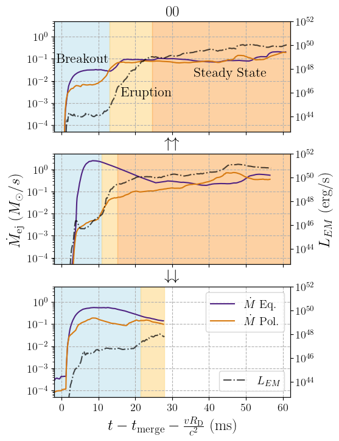
图注：Evolution of mass ejection rate divided into equatorial $(\theta \geq 45^\circ)$ and polar $(\theta < 45^\circ)$ components, along with Poynting luminosity, all extracted from a spherical detector at $R_D = \SI{740}{km}$. We use the Bernoulli criterion (Eq.~\ref{eq:bernoulli}) to flag unbound material. We shift the data by the propagation time to the detector surface. The top, middle, and bottom plots show data from the \(\nspc,\) \(\ppc,\) and \(\mm\) simulations, respectively. Following descriptions in Section \(\ref{sssec:eruption},\) the blue, yellow, and orange shaded regions correspond to the breakout, eruption, and steady state phases, as labeled in the upper plot.
对应解读：对应“建议重点查看的图表”第4项抛射质量流率和角分布，以及关键图表逐图导读中的图4；也支撑模型比较中关于同向自旋赤道抛射和极向磁爆发阶段划分的讨论。
入选理由：该图直接给出三种自旋模型的赤道/极向质量抛射率和Poynting luminosity，并标出breakout、eruption、steady state阶段，是验证磁爆发是否发生、出流是否极向增强、以及不同自旋模型抛射物差异的核心诊断，比单纯形态快照更能支撑论文主要结论。
来源与置信度：\(arxiv_source\)；high；\(arxiv_source\) / main.tex:figure[9]
Fig10
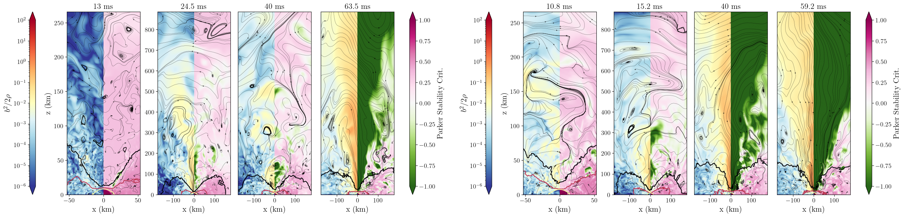
图注：Quantities describing magnetic breakout and propagation in the x-z plane from the \(\nsp\) (top) and \(\pp\) (bottom) simulations. Panels show characteristic times in the outflow evolution from Fig.~\(\ref{fig:Mdot_L},\) corresponding to, from left to right, the beginning of the eruption phase, the beginning of the steady state, a representative time within the steady state, and the final snapshot. We plot $b^2/2\rho$ on the left of each panel, and the Parker stability criterion from Eq.~(\ref{eq:parker}) on the right. Note that we show a zoomed in view of the remnant in the leftmost plot. We superimpose poloidal magnetic field streamlines and density contours at $10^{13}, 10^{11},$ and $10^9~\mathrm{{g~cm}^{-3}}$.
对应解读：对应“建议重点查看的图表”第3项极向出流二维结构、第7项短伽马暴可行性诊断，以及关键图表逐图导读中的图3。
入选理由：该图展示无旋和同向自旋模型中磁化量$b^2/2\
ho$、Parker稳定性判据、磁力线和密度等关键空间诊断，能判断所谓磁爆发是否形成连续低密度准直通道，也能评估是否接近短伽马暴所需的低重子污染、高磁化条件。
来源与置信度：\(arxiv_source\)；high；\(arxiv_source\) / main.tex:figure[10]
Fig01
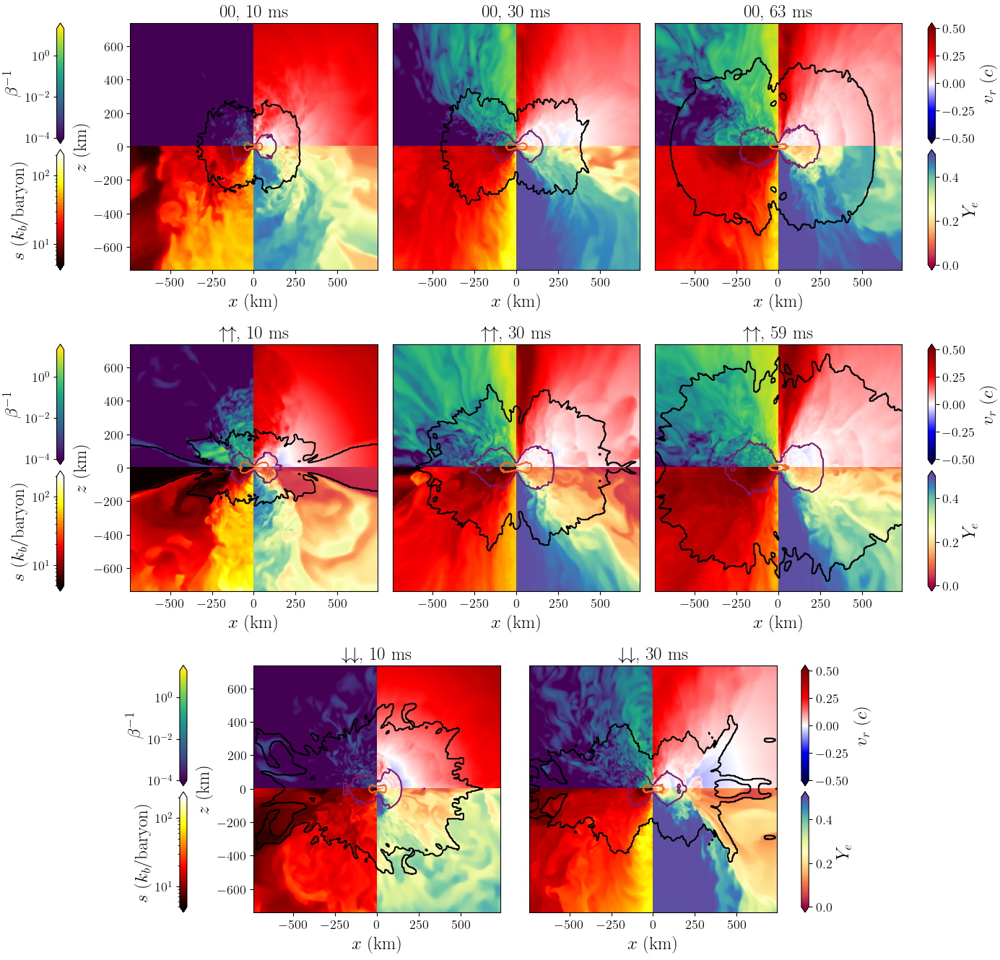
图注：Snapshots in the x-z plane of, clockwise from upper left, the inverse plasma $\beta$ parameter, radial velocity $v_r$, electron fraction $Y_e$, and specific entropy $s$ at $\SI{10}{ms},\,\SI{30}{ms},$ and/or the final snapshot of each spin case. The 00, \(\ppc,\) and \(\mm\) cases are shown in the top, middle, and bottom rows. Contours mark densities of $10^7, 10^9,$ and $10^{11}\,\mathrm{g~cm}^{-3}$. The initial postmerger conditions induced by different merger dynamics are visible in the first snapshots at $\SI{10}{ms}$ and exert strong influences on later dynamics shown to the right.
对应解读：对应“建议重点查看的图表”第1项初始配置和并合后密度/温度/组分快照，以及第5项中关于$Y_e$和熵空间分布的检查。
入选理由：该图按三种自旋模型比较逆等离子体beta、径向速度、电子丰度$Y_e$和熵的x-z切片，直接呈现不同并合动力学造成的早期后并合环境差异，尤其有助于识别极向污染、出流通道和中微子重处理相关的高$Y_e$区域。
来源与置信度：\(arxiv_source\)；high；\(arxiv_source\) / main.tex:figure[1]
Fig06
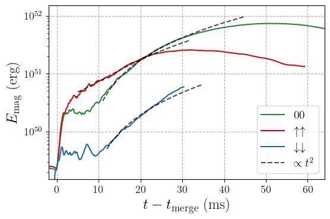
图注：Evolution of the \(\elmag\) energy integrated over the simulation domain for each spin case. Black dashed lines represent the contribution of the linear growth of $B_\phi$ due to magnetic winding to the total $E_\mathrm{mag}$.
对应解读：对应“建议重点查看的图表”第2项磁能随时间曲线，以及关键图表逐图导读中的图2；也支撑模型比较中磁场放大和磁绕机制的讨论。
入选理由：该图给出三种自旋模型全域电磁能演化，并用黑色虚线标出磁绕导致的线性增长贡献，是判断同向、无旋、反向模型磁场放大效率和饱和值差异的最直接时间序列诊断，比只看局部最大磁场更稳健。
来源与置信度：\(arxiv_source\)；high；\(arxiv_source\) / main.tex:figure[6]
Fig11
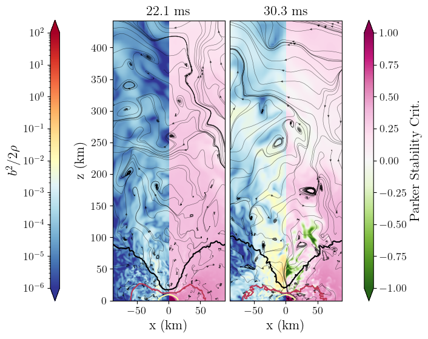
图注：Same as Fig.~\(\ref{fig:jets}\) for the \(\mm\) case. We only show two panels corresponding to the beginning of the eruption phase, and the final time. Note the different axes extent compared to Fig.~\(\ref{fig:jets}.\)
对应解读：对应“建议重点查看的图表”第3项极向出流结构、第7项短伽马暴可行性诊断，以及详细解读中反向自旋模型磁风受阻、碎屑污染更重的段落。
入选理由：该图是Fig10在反向自旋模型中的对应诊断，虽然面板较少，但对比较反向自旋为何不能形成类似无旋/同向模型的磁爆发通道非常关键，可直接支撑摘要中“反向自旋阻碍磁驱风传播”的结论。
来源与置信度：\(arxiv_source\)；high；\(arxiv_source\) / main.tex:figure[11]
Fig12
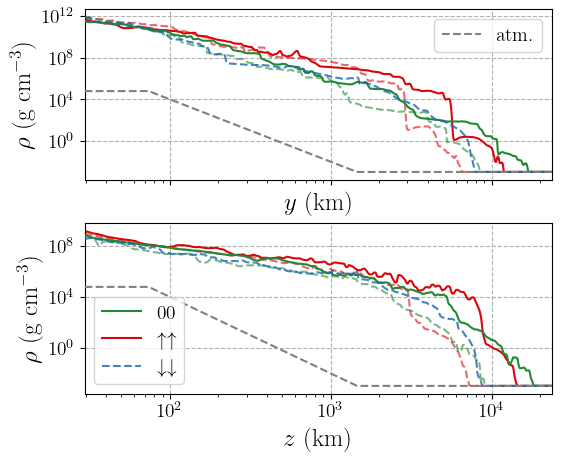
图注：1D profiles of the density $\rho$ along the y and z axes. Dashed colored curves show profiles taken at $\SI{30}{ms}$ postmerger, while solid lines show the final time in \(\nsp\) and \(\pp\) cases. The gray dashed curve shows the value of the radially decreasing atmosphere floor described in Section \(\ref{sssec:atm}.\)
对应解读：对应“建议重点查看的图表”第7项短伽马暴可行性诊断和第8项稳健性/系统误差诊断；也对应模型拟合段落中关于数值大气、密度floor和极向重子污染的讨论。
入选理由：该图沿y轴和z轴给出密度剖面，并与大气floor比较，能检验极向低密度区域是否受数值大气影响，以及出流是否仍存在过高重子加载；这是判断磁风不能成为典型短伽马暴喷流的重要系统误差图。
来源与置信度：\(arxiv_source\)；high；\(arxiv_source\) / main.tex:figure[12]
强相关工作
这项工作与双中子星并合后长寿命遗迹的数值相对论研究直接相连，特别是关于磁场放大、磁驱风、中微子照射和千新星蓝色成分来源的研究。应检索关键词包括“binary neutron star merger GRMHD neutrino transport long-lived remnant”，“magnetically driven wind neutron star merger”，“M1 neutrino transport kilonova ejecta”，以及“spin effects binary neutron star merger”。相关论文常讨论 Kelvin-Helmholtz 不稳定性、磁旋转不稳定、盘风和动态抛射物之间的相对贡献。
它也与短伽马暴中央引擎争论有关。一类观点强调黑洞加吸积盘和 Blandford-Znajek 机制更容易产生清洁相对论喷流；另一类研究探索长寿命磁星或超大质量中子星遗迹能否通过强磁场发射极向 outflow。本文结果比较谨慎：长寿命遗迹能产生磁性准直出流和有趣核合成，但早期出流太慢、太重子污染，不像典型短伽马暴。这与“有磁化漏斗就足够产生短伽马暴”的简单图像形成张力。检索关键词可用“short gamma-ray burst baryon loading neutron star merger remnant”，“Blandford Znajek binary neutron star merger jet”，“magnetar remnant sGRB jet failure”。
相似工作：
- https://arxiv.org/abs/2605.30548
- https://ui.adsabs.harvard.edu/search/q=binary%20neutron%20star%20merger%20GRMHD%20neutrino%20transport%20long-lived%20remnant
- https://ui.adsabs.harvard.edu/search/q=spin%20effects%20binary%20neutron%20star%20merger%20GRMHD
基础理论 / 方法工作：
- https://arxiv.org/abs/1710.05832
- https://arxiv.org/abs/1710.05833
- https://ui.adsabs.harvard.edu/search/q=Metzger%20kilonova%20r-process%20neutron%20star%20merger
- https://ui.adsabs.harvard.edu/search/q=Blandford%20Znajek%20mechanism%20relativistic%20jets
相反观点 / 张力线索：
- https://ui.adsabs.harvard.edu/search/q=short%20gamma-ray%20burst%20jet%20baryon%20loading%20binary%20neutron%20star%20merger
- https://ui.adsabs.harvard.edu/search/q=black%20hole%20accretion%20disk%20engine%20short%20gamma-ray%20burst%20neutron%20star%20merger
- https://ui.adsabs.harvard.edu/search/q=magnetar%20remnant%20short%20gamma-ray%20burst%20jet%20neutron%20star%20merger
6. Exact Mass Conservation in Binary Neutron Star Merger Simulations
- 来源：arXiv / astro-ph.HE
- 链接：https://arxiv.org/abs/2605.30430v1
- 作者：Boris Daszuta, Sebastiano Bernuzzi, Joan Fontbuté, Ruocheng Zhai, Alan Tsz-Lok Lam, Jacob Fields, David Radice
- 评分：novelty 8/10，importance 8/10，relevance 7/10，final 8.65/10
- 推荐理由：提出双中子星并合数值模拟中精确质量守恒的大气处理算法，可影响引力波、抛射物和并合后电磁对应体计算的可靠性，是可复用的数值方法进展。
中文题目：双中子星并合模拟中的精确质量守恒
做了什么：这篇论文处理数值相对论双中子星并合模拟里的一个老问题：欧拉网格流体代码通常用低密度“人工大气”替代真空，但大气重置会在保守格式之外悄悄增减重子质量和电子数。作者提出一种局域重标定算法，把每一步大气处理造成的质量变化重新分配回大气区域，并结合低阶通量修正；还测试了在远离中心天体处强制真空的“伪真空”方案。结果显示，重标定方案可把重子质量和电子数守恒推进到舍入误差水平；伪真空方案守恒略差但误差近似常数，并可能改善高速尾部抛射物的计算。更重要的是，不同大气处理和两套代码比较表明，只要自适应网格加密采用保守通量修正，目前的引力波和动力学抛射物结果总体稳健。
为什么重要：双中子星并合的抛射物质量、速度尾部、电子丰度和后并合引力波都对数值误差敏感，而人工大气是误差来源之一。若质量不守恒与真实抛射物量级相当，千新星和重元素核合成推断就会被污染。这项工作的重要性在于，它把“真空怎么处理”从经验技巧推进到可诊断、可守恒、可跨代码比较的算法问题。
理论 / 观测 / 仪器方法价值：对理论和数值方法的价值是明确的：它给出一个不需要彻底改写欧拉相对论流体框架、但能严格守恒重子质量与电子数的局域修正；同时评估了低阶通量修正和伪真空对引力波、动力学抛射物和高速尾部的影响。对观测解释而言，它帮助判断当前并合模拟中哪些结论受人工大气影响小，哪些量仍需谨慎。
为什么应该关注：如果你使用或引用双中子星并合模拟来解释 \(GW170817\) 类事件、千新星光变、\(r\)-过程产额或后并合频谱，这篇文章直接关系到“模拟里跑出去的物质到底是不是数值大气”。它还提醒读者：高分辨率本身不够，网格边界通量、真空地板和守恒诊断同样决定结果可信度。
展开详细解读：文章讲解、背景、理论、重点章节、图表与相关工作
文章详细讲解
科学问题：数值相对论中的双中子星并合模拟必须同时处理强引力、相对论流体、微物理状态方程和巨大密度动态范围。中子星内部密度可达核密度，而星外应是真空。标准欧拉有限体积方法很难直接演化真空，因为原始变量恢复、声速、特征速度和除以密度的量都会在 \(\rho\to 0\) 时变得病态。因此大多数代码在星外放置低密度人工大气，并在单元密度低于地板值时重置。这虽然稳定，却会在每次重置时创造或删除重子质量；即使守恒型通量公式本身严格守恒，附加的大气处理仍会破坏全局守恒。
作者怎么做：论文提出一个局域大气重标定算法。基本想法不是禁止大气重置，而是记录大气处理带来的守恒量变化，并在合适的大气区域中按局域权重重新缩放，使总重子质量和电子数在机器舍入误差内保持不变。算法还与低阶通量修正结合，用来处理自适应网格加密边界上的通量不匹配。作者进一步测试一种“伪真空”方案：在远离中心致密物体的外层区域强制维持严格真空或近似真空，以减少低密度大气与高速抛射尾部的混淆。
关键结果：在包含微物理状态方程、覆盖多轨道和后并合阶段的双中子星模拟中，重标定算法让重子质量和电子数守恒达到舍入误差精度。这不是简单地改善一个后处理诊断，而是在演化过程中把大气源项造成的非守恒局域补偿掉。伪真空方案的质量误差稍大，但近似保持常数，并且在高速尾部抛射物的估计上可能更干净。论文还做了不同大气处理之间的比较和两套代码对照，发现只要采用保守自适应网格加密和通量修正，引力波相位、主要动力学抛射物性质等核心结果对大气选择相当稳健。
局限和下一步：这项工作并不意味着所有低密度区域相关量都已完全可靠。高速尾部、极低质量抛射组分、电子丰度分布尾部和后期磁流体风可能仍受分辨率、重建格式、温度处理、弱相互作用和磁场演化影响。伪真空方案虽然可减少远区大气污染，但其边界放置、切换条件和对弱物质流的影响仍需在更长时标、更高分辨率以及包含中微子输运和磁流体的模拟中验证。下一步应把这种守恒诊断推广到更复杂的物理模块，并形成跨代码基准测试。
背景知识
研究对象是双中子星并合的全广义相对论流体模拟。此类模拟直接服务于引力波模板、后并合频率解释、短伽马暴中心引擎、千新星抛射物和 \(r\)-过程核合成。问题的困难在于，物理上星外是真空，数值上欧拉网格不能舒服地处理 \(\rho=0\)。这不是小技术细节，因为并合抛射物的总质量可低至 \(10^{-4}\) 到 \(10^{-2}\,M_\odot\)，而大气地板累积误差可能进入同一数量级。
历史上，人工大气是相对论流体代码的常规选择。代码会设定一个密度地板 \(\rho_{\rm atm}\)，并把低于阈值的单元重置为大气状态。这使原始变量恢复稳定，也避免在真空附近出现负压、超光速速度或病态特征速度。然而这一步通常不是有限体积通量守恒方程的一部分，而是演化后的人为修补。因此，即便离散通量在每个网格面上满足守恒，单元重置仍会改变全局重子质量、动量、能量和组分。
这个问题现在值得重新看，有两个原因。第一，多信使天文学已经把并合抛射物从“定性输出”变成了可与千新星光变和谱线模型比较的量。高速少量抛射物尤其影响早期蓝光、自由中子衰变信号和外激波。第二，数值相对论模拟正进入跨代码、跨物理模块比较阶段；如果不同代码的大气策略不同，就很难判断差异来自物理模型还是数值真空处理。
该领域常见误区之一是认为“守恒格式”自动保证总质量守恒。实际上，有限体积格式只保证通量更新部分守恒；大气重置、原始变量恢复失败后的修补、自适应网格加密插值和边界处理都可能额外引入源项。另一个误区是只看总重子质量误差，而忽略电子数或 \(Y_e\) 加权质量。对核合成和不透明度而言，少量但 \(Y_e\) 特殊的数值污染也可能产生明显影响。
基础理论 / 方法脉络
基础物理图像从守恒律开始。相对论流体在弯曲时空中满足重子数守恒和能量动量守恒，其中重子数流为 \(J^\mu=\rho u^\mu\)，\(\rho\) 是静质量密度，\(u^\mu\) 是四速度。有限体积代码把这些连续方程写成守恒变量在网格单元中的体积分随数值通量变化。只要源项和边界处理一致，离散更新可以很好地保存全局重子数。
麻烦来自真空。欧拉流体方程的常用变量包括 \(\rho\)、压力 \(p\)、比内能 \(\epsilon\)、速度 \(v^i\) 和洛伦兹因子 \(W\)。在 \(\rho\to 0\) 处，状态方程、特征分解和保守变量到原始变量的反演都可能失效。人工大气通过指定 \(\rho_{\rm atm}\)、温度或内能、速度和组分来避免这种失效。但一旦某个单元被重置为大气，单元内的 \(D\)、\(D Y_e\) 等守恒变量就被外力改写。
本文的模型假设是：人工大气仍可作为稳定器保留，但大气处理造成的净质量变化应在同一时间步内被局域补偿。这样做等价于把大气重置视为一个可测量的数值源项，再用局域重标定使其全局积分为零。它并不声称恢复真实真空微观物理，而是使数值算法至少不在总重子数和电子数上制造假信号。
观测或物理输出层面，读者应重点区分几类量：引力波相位和振幅主要由致密核心动力学决定，通常对低密度大气不太敏感；动力学抛射物质量、速度分布和 \(Y_e\) 分布则直接依赖低密度外流的识别；高速尾部更脆弱，因为它的质量很小且接近大气污染阈值。常见退化包括分辨率与大气密度地板的退化、抛射物判据与外边界位置的退化，以及微物理状态方程与数值黏性之间的退化。
公式与推导
第一步是连续重子数守恒。相对论流体满足
这里 \(J^\mu\) 是重子数流，\(\rho\) 是流体本征质量密度，\(u^\mu\) 是四速度。该式的物理意义是没有核反应改变总重子数时，任意四维体积内的重子数只通过边界流入流出。
在 \(3+1\) 分解中，有限体积代码常演化守恒密度
其中 \(D\) 是相对于欧拉观测者的密度，\(W\) 是洛伦兹因子，\(\alpha\) 是 lapse 函数，\(v^i\) 是三速度。全局重子质量可写成
其中 \(\gamma\) 是空间度规行列式。若边界无流出且无数值修补，\(M_b\) 应保持常数。
离散有限体积更新可概括为
其中 \(U_i\) 代表单元 \(i\) 的守恒变量，\(F_{i,f}\) 是面 \(f\) 上的数值通量，\(A_{i,f}\) 是面面积，\(S_i\) 是几何或物理源项。对重子数而言理想情况下 \(S_i=0\)，相邻单元共享的通量符号相反，所以内部面通量会相互抵消。
人工大气重置相当于在通量更新后额外施加映射
其中 \(D_{\rm atm}\) 是大气地板，\(D_{\rm thr}\) 是触发阈值。由此产生的非守恒量可诊断为
如果 \(\Delta M_{\rm atm}\ne 0\)，则大气处理已经向系统注入或移除质量。
本文重标定思想可抽象为在选定的大气补偿区域 \({\cal A}\) 内施加局域修正
其中 \(w_i\) 是非负权重，\(\lambda\) 是由全局守恒条件确定的系数。要求修正后质量变化为零，得到
这个式子说明补偿不是任意调参，而是由当前时间步的大气质量误差唯一决定。
电子数或电子分数加权质量也要守恒。若演化变量为 \(D Y_e\)，其中 \(Y_e\) 是电子分数，则对应积分为
大气重置造成的电子数误差为
同样可用局域重标定使 \(\Delta Q_e\) 归零，从而避免 \(Y_e\) 分布受到大气源项系统污染。
自适应网格加密还需要通量修正。粗细网格交界处的保守性条件可写成
若不满足该关系，粗细网格会在边界处产生额外质量误差。低阶通量修正牺牲局部高阶精度来稳定并恢复守恒，是本文稳健性的关键背景。
抛射物诊断通常用无束缚判据和外流积分。一个常见近似是 Bernoulli 或测地线判据，例如
表示流体元在忽略后续相互作用时可逃逸到无穷远。抛射物流量可估为
其中 \(S_r\) 是半径 \(r\) 的球面，\(\beta^r\) 是 shift 向量径向分量。大气误差若进入低密度高速流，就会直接污染 \(\dot{M}_{\rm ej}\) 和速度尾部。
最后，数值实验的核心诊断可写成相对守恒误差
其中 \(M_{\rm out}(t)\) 是通过外边界流出的质量。若算法精确守恒，\(\epsilon_M(t)\) 应接近浮点舍入误差；若采用伪真空或普通大气，\(\epsilon_M(t)\) 的大小和时间趋势就是判断数值污染的直接指标。
模型拟合 / 应用方法
这篇文章不是传统意义上拟合观测数据的论文，但它有一套与“模型拟合”非常相似的数值参数评估逻辑。可调或需选择的量包括大气密度地板 \(\rho_{\rm atm}\)、触发阈值 \(\rho_{\rm thr}\)、补偿区域 \({\cal A}\)、重标定权重 \(w_i\)、伪真空半径或切换条件、网格分辨率、重建格式和通量修正策略。每一组选择都对应一种数值模型，输出包括守恒误差、引力波相位、抛射物质量、速度分布和 \(Y_e\) 分布。
“似然”在这里可类比为多诊断量同时满足收敛与守恒的程度。好的方案应让 \(M_b\) 和 \(D Y_e\) 的全局误差接近舍入误差，且不在引力波相位中引入分辨率不收敛的偏移；同时抛射物诊断应对提取半径、阈值和分辨率变化保持可解释。读者看这类论文时，不应只问某个方案给出的 \(M_{\rm ej}\) 是否更大，而应看差异是否随分辨率减小、是否集中在低密度尾部、是否与大气质量预算相关。
主要退化关系包括：较低的 \(\rho_{\rm atm}\) 可能减少质量污染，但会增加原始变量恢复失败和负压风险；较强的伪真空清理可减少远区背景，却可能误删真实的极低密度外流；低阶通量修正提高守恒性，但可能增加局部数值扩散；更高分辨率既能更好解析潮汐尾，也会改变大气单元体积和重置频率。因此，单次高分辨率结果并不等同于系统误差已受控，必须做参数和分辨率扫描。
残差诊断应包括全局质量误差随时间曲线、电子数误差曲线、粗细网格边界附近的通量残差、抛射物积分随半径的变化，以及不同大气方案之间的波形相位差。若某个方案在并合前误差缓慢累积、并合瞬间出现跳变，说明大气与冲击或潮汐尾相互作用明显；若误差近似常数且不随关键物理阶段变化，通常更容易作为系统偏置处理。
实际应用中，这套方法可作为双中子星模拟生产链的质量控制模块。对于引力波模板，重点是相位收敛和后并合频谱峰值是否稳定；对于千新星和核合成后处理，重点是 \(M_{\rm ej}\)、速度分布、熵和 \(Y_e\) 直方图是否受低密度阈值影响；对于高速尾部研究，还应专门比较伪真空与普通大气下的高速度小质量分量，因为这部分最容易被数值地板伪造或掩盖。
重点章节 / 结果段落怎么读
数据和数值设置部分应先读。这里会说明双中子星初始模型、微物理状态方程、网格结构、分辨率、演化时长和所用代码。读者需要确认模拟覆盖了并合前多轨道和后并合阶段，因为大气误差可能在不同阶段有不同表现；也要看边界和自适应网格加密设置，因为守恒问题常出在网格层级交界处。
方法部分是全文核心。应重点看作者如何定义人工大气、触发阈值、局域重标定区域和权重，以及如何同时处理 \(D\) 与 \(D Y_e\)。关键不是“把质量调回来”这句话，而是调到哪里、是否保持局域物理合理性、是否会改变星体表面或真实外流。
通量修正和伪真空段落也应细读。低阶通量修正解释了为什么保守自适应网格加密对结果稳健性重要；伪真空处理则是另一种减少外区大气污染的策略。读者应关注它们是否分别影响守恒误差、波形和抛射物，而不是把所有改进都归因于一个算法。
结果部分应按诊断量阅读：先看总重子质量和电子数守恒，再看引力波相位和频谱，最后看抛射物质量、速度分布和高速尾部。这个顺序有助于区分“全局守恒变好了”与“物理输出显著改变了”两件事。
讨论和跨代码比较部分给出最实用的信息。作者的结论并不是普通大气完全无害，而是在保守自适应网格和通量修正条件下，当前引力波与动力学抛射物的主要结果对合理大气处理较稳健。读者应把这理解为有条件的稳健性声明，而非所有并合模拟的普遍保证。
建议重点查看的图表
-
守恒误差随时间曲线：应检查 \(M_b\) 和电子数误差是否达到舍入误差，普通大气是否出现累积漂移，伪真空误差是否近似常数。
-
不同大气方案的引力波相位差：重点看并合前后相位差是否随时间系统增长，以及是否小于分辨率误差或跨代码差异。
-
后并合频谱或主频诊断：检查大气处理是否移动后并合峰值频率；如果峰位稳定，说明致密核心动力学未被大气方案显著改变。
-
动力学抛射物质量随时间或提取半径变化：看 \(M_{\rm ej}\) 是否在不同方案间一致，差异是否主要来自早期冲击、潮汐尾或晚期低密度流。
-
抛射物速度分布，特别是高速尾部：应关注高 \(v\) 低质量区域，因为那里最容易受大气地板和伪真空处理影响。
-
\(Y_e\) 分布或 \(D Y_e\) 守恒诊断：看电子数守恒改善是否也反映在抛射物组分分布的稳定性上，而不是只改善总质量。
-
分辨率或两代码比较表：检查不同算法差异是否小于分辨率系统误差；若跨代码一致，结论可信度显著提高。
关键图表逐图导读
图 1：通常应是算法或大气处理示意图，横轴和纵轴可能不是物理坐标，而是流程、网格层级或密度区域。读者应看清哪些单元被判定为真实流体、哪些被判定为大气，重标定补偿发生在何处。读图陷阱是把补偿理解成对整片计算域均匀加质量；真正关键是局域权重和排除真实高密度区域。
图 2：守恒误差随时间图通常以时间或约化时间为横轴，以相对质量误差 \(\epsilon_M\) 或电子数误差为纵轴。模型线会对应标准大气、重标定大气、伪真空和可能的通量修正开关。主要结论应是重标定方案把误差压到舍入水平，而标准大气可能随时间或并合阶段漂移。读图时要注意纵轴是否为对数坐标，以及是否已扣除外边界流出。
图 3：引力波波形或相位差图应以时间、频率或约化 retarded time 为横轴，以 \(h_{22}\)、相位差或频谱幅度为纵轴。读者应比较大气方案差异与分辨率误差带。如果大气方案之间的相位差没有系统性放大，说明低密度处理没有显著反作用到核心轨道动力学。陷阱是只看振幅重合，而忽略小相位漂移在多周期累积后的影响。
图 4：抛射物质量和速度分布图通常以时间、速度 \(v\) 或 \(\Gamma v\) 为横轴，以累积质量或微分质量为纵轴。重点是普通大气与伪真空在高速尾部是否分叉。高速尾部质量很小，误差条或分辨率带非常重要；若没有误差带，应谨慎解读细小差异。
图 5：\(Y_e\) 或组分分布图可能展示抛射物质量对 \(Y_e\) 的直方图。重标定电子数守恒应减少大气造成的整体偏移，但不一定消除弱相互作用、温度和中微子输运带来的物理不确定性。读图陷阱是把 \(Y_e\) 分布的稳定性完全归功于大气算法，而忽略微物理模块差异。
图 6：分辨率或跨代码比较图、表最能支撑稳健性结论。应看相同物理模型下不同代码、不同分辨率和不同大气方案给出的引力波、\(M_{\rm ej}\)、平均速度和平均 \(Y_e\)。如果大气方案差异小于代码间差异或分辨率外推误差，作者关于当前结果稳健的说法才有基础。
论文原图 / 可嵌入图片
Fig02

图注：Evolution of the relative error in baryon (rest) mass and electron number conservation for the four vacuum algorithms at fixed finest resolution $\delta x_f$. Dashed (solid) lines highlight mass or electron number gains (losses). The plot demonstrates exact (to round off error) conservation for both quantities with the rescaling algorithm (RSC) introduced in our work, and an approximately constant violation ${\lesssim}10^{-11}$ with both variants of pseudo-vacuum (PV, PVa) algorithm. The standard atmosphere treatment (SAS) introduces relative gains of order ${\sim}10^{-6}$ in both mass and electron number conservation. Simulations involving the lower resolutions $\delta x_c$ and $\delta x_m$ display comparable behaviour (not depicted here). \(\athenak{}\) data obtained with a very similar simulation setup as \(\gra{}\) SAS are shown in black.
对应解读：对应“建议重点查看的图表”第1、6项，以及“关键图表逐图导读”图2和模型拟合段落中的全局质量误差、电子数误差残差诊断。
入选理由：这是全文最核心的守恒性证据，直接展示四种真空/大气算法下重子质量和电子数相对误差随时间演化；能验证RSC是否达到舍入误差、SAS是否产生约10^-6量级累积增益、PV/PVa是否保持近似常数偏差，比其他图更直接支撑论文标题中的“exact mass conservation”。
来源与置信度：\(arxiv_source\)；high；\(arxiv_source\) / paper20260528.tex:figure[2]
Fig08

图注：Gravitational waves phase (top) and amplitude (bottom) differences of the four atmosphere treatments (SAS-blue, RSC-orange, PV-green and PVa-red) implemented in \(\gra{}\) with respect to \(\athenak{}\) data. Waves are extracted at a sphere of coordinate radius $R\simeq295.3\,\mbox{km}$. Simulations are at resolution $\delta x_f$.
对应解读：对应“建议重点查看的图表”第2、7项，以及“关键图表逐图导读”图3、图6中关于不同大气方案与两代码比较的稳健性判断。
入选理由：该图把四种大气处理的引力波相位和振幅差异统一相对于AthenaK代码数据展示，最适合判断大气方案差异是否小于跨代码系统差异；它直接支撑论文关于引力波结果对大气处理稳健的结论。
来源与置信度：\(arxiv_source\)；high；\(arxiv_source\) / paper20260528.tex:figure[8]
Fig04

图注：Evolution of ejecta mass (top) and mass-averaged velocity (bottom) for the four atmosphere algorithms. Unbound mass is monitored either according to Bernoulli criterion (solid lines) or geodesic criterion (dashed line) and extracted at a sphere of coordinate radius $R\simeq 591\,\mbox{km}$. Common (finest) resolution of these runs is $\delta x_f$. \(\athenak{}\) data obtained with a very similar simulation setup as \(\gra{}\) SAS are shown in black.
对应解读：对应“建议重点查看的图表”第4项，以及“关键图表逐图导读”图4中关于动力学抛射物质量和平均速度随时间的解读。
入选理由：该图同时给出抛射物质量和质量加权平均速度随时间演化，并比较Bernoulli与geodesic判据、四种大气算法和AthenaK参考结果，是评估大气处理是否影响动力学抛射物总量与速度诊断的关键图。
来源与置信度：\(arxiv_source\)；high；\(arxiv_source\) / paper20260528.tex:figure[4]
Fig05

图注：Mass-weighted histograms of ejecta angular distribution (top) and asymptotic velocity (bottom). Unbound mass is monitored according to the Bernoulli criterion and extracted at a sphere of coordinate radius $R\simeq 591\,\mbox{km}$. The cumulative histograms are computed at $t-t_{\rm mrgr}=21\,\mbox{ms}$. Common (finest) resolution of these runs in $\delta x_f$. \(\athenak{}\) data obtained with a very similar simulation setup as \(\gra{}\) SAS are shown in black.
对应解读：对应“建议重点查看的图表”第5项，以及“关键图表逐图导读”图4中关于速度分布和高速尾部的部分。
入选理由：该图展示抛射物角分布和渐近速度的质量加权直方图，能检查低质量高速尾部是否在SAS、RSC、PV、PVa之间分叉；相比只看总抛射质量，它更敏感于伪真空处理对尾部物质的影响。
来源与置信度：\(arxiv_source\)；high；\(arxiv_source\) / paper20260528.tex:figure[5]
Fig07

图注：Self convergence of the phase of the gravitational wave's leading mode extracted at $R\simeq295.3\,\mbox{km}$ for the different atmosphere treatments: SAS, RSC, PV and PVa from top to bottom respectively.
对应解读：对应“建议重点查看的图表”第2、7项，以及模型拟合段落中关于引力波相位收敛和分辨率系统误差的诊断。
入选理由：该图直接给出不同大气处理下主导引力波模式相位的自收敛行为，适合判断相位差是否随分辨率收敛、是否存在由大气算法引入的非收敛系统漂移，是稳健性论证的重要补充。
来源与置信度：\(arxiv_source\)；high；\(arxiv_source\) / paper20260528.tex:figure[7]
Fig06

图注：Gravitational waves strain and instantaneous frequency. Real part and instantaneous frequency of the $(\ell m)=(22)$ mode of the strain, based on evolution with the standard atmosphere treatment (SAS) in (blue, solid lines), and rescaling (RSC), in (orange, dashed lines). Top, middle, and bottom panels are computed from simulations involving finest resolutions of $\delta x_c$, $\delta x_m$, and $\delta x_f$ respectively. Waves are extracted at a sphere of coordinate radius $R\simeq295.3\,\mbox{km}$.
对应解读：对应“建议重点查看的图表”第2、3项，以及“关键图表逐图导读”图3中关于波形、相位/频率和后并合动力学稳定性的部分。
入选理由：该图显示SAS与RSC在不同分辨率下的h22实部和瞬时频率，可用于检查并合前后波形与后并合频率是否受重标定方案显著影响；虽然不是频谱峰值图，但仍是判断核心动力学和引力波诊断稳定性的直接证据。
来源与置信度：\(arxiv_source\)；high；\(arxiv_source\) / paper20260528.tex:figure[6]
强相关工作
这篇工作位于数值相对论双中子星并合方法学传统中，和保守高分辨率激波捕捉、人工大气、原始变量恢复、自适应网格加密通量修正等问题直接相关。相近工作可检索关键词包括“binary neutron star merger atmosphere treatment”，“conservative adaptive mesh refinement numerical relativity”，“baryon mass conservation neutron star merger”，“dynamical ejecta atmosphere floor”。这些关键词会带到 \(Whisky\)、\(BAM\)、\(Einstein Toolkit\)、\(SpEC\)、\(THC\)、\(WhiskyTHC\)、\(GR-Athena++\) 等代码相关论文。
与基础理论工作的关系是：连续方程本身早已保证重子数守恒，问题在于离散算法和真空边界处理。相反或张力观点通常不是否认质量守恒重要，而是认为人工大气误差在足够低地板和高分辨率下可忽略。本文的贡献是把这个判断量化：在保守自适应网格和通量修正下，主波形与主要抛射物确实相对稳健；但对高速尾部和电子数守恒，精确大气处理仍有可见价值。检索时还应加入“fast tail ejecta”，“kilonova ejecta numerical relativity”，“flux correction AMR relativistic hydrodynamics”。
相似工作：
- https://arxiv.org/abs/2605.30430
- https://arxiv.org/abs/1205.5111
- https://arxiv.org/abs/1304.5544
- https://arxiv.org/abs/1510.06398
基础理论 / 方法工作：
- https://arxiv.org/abs/gr-qc/0003101
- https://arxiv.org/abs/gr-qc/9911018
- https://arxiv.org/abs/1002.3565
- https://arxiv.org/abs/1012.5170
相反观点 / 张力线索：
- https://arxiv.org/abs/1410.7457
- https://arxiv.org/abs/1807.00011
说明
评分由 LLM 给出初评，再由本地阈值策略过滤；IACT、TeV 伽马射线和高能中微子天文学按重点方向处理。